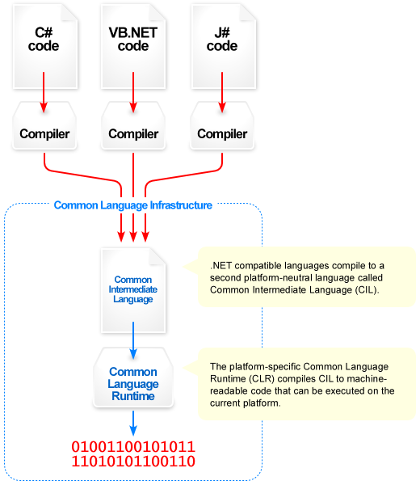
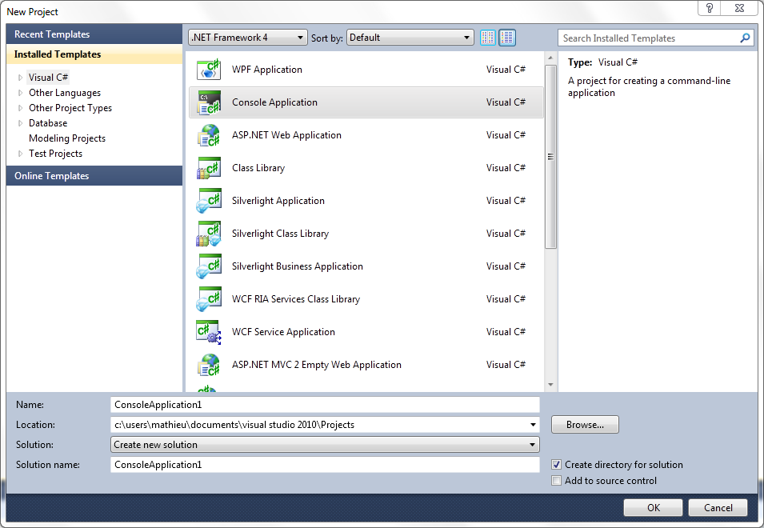

Bonjour à vous. Ce premier chapitre va vous présenter la structure général de .net, bien que cela puisse vous paraître inutile, vous verrez vite l'importance cruciale de savoir comment tout cela fonctionne.
Lorsque l'on écrit un programme, on choisit un langage dans lequel développer. Certes, les choix sont nombreux:
C
C++
Java
C#
Visual Basic
PHP (Oui, on peut faire de vraies applications au-delà d'un site web.)
etc
Ces langages se divisent entre deux principales catégories : langages compilés et langages interprétés.
Les langages compilés
Beaucoup de langages sont compilés. C'est-à-dire, qu'après avoir écrit votre code, un programme, le compilateur, le transforme en langage machine que votre processeur comprend. Les langages de bases sont des langages compilés, comme le C ou le C++ expliqués par M@téo. Si une modification doit être apportée dans votre programme, vous devez compiler à nouveau votre code source. Par contre, une fois compilé, ce programme n'aura besoin de rien d'autres pour fonctionner.
Les langages interprétés
Les langages interprétés ne sont pas transformés en langage machine avant d'être exécutés. Généralement, un interpréteur transforme la source en un résultat. Les exemples les plus simples de langages interprétés sont les langages permettant d'afficher une page web, ils sont lu par une programme externe (le navigateur web) qui affichera un résultat. Si une modification est ajoutée à votre code source, il n'y aura pas besoin de compiler une nouvelle fois l'application, par contre ces types de programmes auront besoin d'autres programmes pour être exécutés (ces programmes sont dit "parseurs", ils lisent le code source puis l'exécutent) par exemple le navigateur web. De même, l'exécution peut être plus lente qu'un programme compilé, car le parsage du code demande des ressources processeurs et donc du temps.
Et le C# dans tout ça ?
Il faut tout d'abord savoir que pour développer en .net, nous pouvons faire avec plusieurs langages dont :
C#
VB.net
C++ adapté au .net
F#
Et bien d'autres
Tous ces langages sont en quelques sortes à mi-chemins entre des langages compilés et interprétés : ils ne sont pas directement compilé en langage machine, mais il ne sont pas non plus interprétés !! En réalité, ils vont être compilés en un langage intermédiaire (appelé IL pour "Intermediate Language"). Lors de l'exécution ce langage intermédiaire va être compilé en langage machine et exécuté par le CLR (Common Language Runtime), ce "runtime" va en quelque sorte faire l'intermédiaire entre notre code et le système d'exploitation en apportant une importante abstraction vis à vis de fonctions systèmes de bases (entrés/sorties, gestion de la mémoire, etc...).
Pour plus de détails sur le fonctionnement interne de .net, je vous laisse cliquer sur l'image pour afficher l'article wikipedia correspondant
Avantages de .NET par rapport aux autres plateformes
Mais, c'est vachement compliqué ! >_ Pourquoi ne pas faire simple ?
Cette architecture apporte plusieurs avantages:
le premier est que l'IL va être exécuté plus rapidement qu'un langage interprété puisqu'il aura été au préalable pré-compilé en un langage déjà proche de la machine.
Ensuite, ce CLR (le "Common Language Runtime") permet au développeur de ne pas se préoccuper de certaines choses, surtout concernant la mémoire. Un "garbage collector" (traduire par "ramasse miette" et non "collectionneur de poubelle" :p ) va s'occuper de libérer les ressources mémoires inutilisées; les fuites de mémoires vont être automatiquement détectées et corrigées.
Peu importe le langage (C#, VB.net, F#, etc...) que l'on utilise, le langage intermédiaire sera exactement le même, c'est à dire que vous pouvez très bien travailler sur un même projet avec plusieurs langages différents, par exemple vous créez la logique et le visuel de votre jeu en C#, puis vous utilisez du F# pour l'intelligence artificielle. Cette "unité" dans ces langages pourtant différent est permise par la CLI (pour "Common Language Infrastructure") qui fournis les spécifications pour qu'un langage puisse être compilé en IL.
Et enfin, peut importe la plateforme Windows que vous avez (XP, Vista, Windows Server, etc..), il vous suffit d'avoir la CLR (en gros d'avoir le framework .net d'installé :p ) pour que votre programme fonctionne. Une partie du framework fonctionne même sous Unix, une simple copie d'un programme peut suffire pour le faire fonctionner d'un système à l'autre. C'est donc le CLR, qui lui sera compilé en langage machine, qui s'occupera de recompiler à l'exécution l'IL de notre programme
D'accord, je vois que .net c'est bien, mais pourquoi apprendre le C# et pas le VB.net ou même le C++? Eux aussi permettent d'exploiter le framework .net.
La réponse est simple, C# a été créé pour .net. C'est le langage qui exploite le mieux le framework. D'autres avantages liés au C# combiné au framework .net sont entre autres (tout ces éléments vont vous paraitre inconnus, mais en lisant ce cours vous allez peu à peu comprendre chacun d'eux) :
Système puissant d'exceptions.
Les delegate, des sortes de variables/fonctions.
Il n'y a que des références.
Les propriétés évitent de devoir écrire autant d'accesseurs.
.net permet de presque tout faire en programmation.
Les événements qui évitent d'alourdir le code avec la déclaration et l'utilisation d'actions.
Typage très fort (dans notre cas, c'est un avantage)
Langage tout objet (de même dans notre cas, ceci va apporter certains avantages)
Utilisation de XAML, un dérivé du XML pour créer nos interfaces graphiques.
XNA, une bibliothèque facile à utiliser qui permet la création de jeux.
Cependant, il faut néanmoins rester conscient que le .net n'a pas que des avantages, les inconvénients sont entre autres:
Même si un portage de .net est en cours sous Unix, seul Windows supporte correctement tout le .net.
Les applications peuvent être désassemblées pour retrouver une approximation de la source initiale. Un outil permet néanmoins de rendre illisible ce code désassemblé.
Même si l'IDE de Microsoft est très puissant, il est assez lourd (~600Mo pour la version Express, plusieurs Go pour les versions professionnelles, ce qui même aujourd'hui peut paraitre important)
Néanmoins, si vous êtes sous Windows, que vous voulez faire de jolis programmes de manière simple, et que vous avez un peu d'espace disque, le C# et .net sont faits pour vous :p .
Maintenant que nous avons un aperçu du fonctionnement du .net, nous allons pouvoir commencer à coder en C#! Tous à vos claviers :pirate:
Tout d'abord, avant de développer, posons nous la question: "Avec quoi développer?" Dans ce cours, tout les exemples sont faits sous Visual Studio, qui est l'environnement de développement spécialement créé pour le .net. Pour ceux qui sont sous Unix (Linux ou Mac OS X), il existe aussi un environnement de développement totalement libre spécialement créé pour faire du .net sous Unix: MonoDevellop.
Visual Studio
Visual Studio (actuellement dans sa version finale 2010) est un outil très puissant, il est décliné en plusieurs versions, certaines gratuites, d'autres payantes. Heureusement pour nous, tout ce que nous allons faire pourra être amplement fait sous une version gratuite dite "Express".
Nous allons néanmoins passer en revue les différentes versions.
Il existe tout d'abord une version professionnelle, en plus du C#, elle nous permet de faire du VB.NET, du développement Web avec ASP.NET, ainsi que du C++ (ISO, ou encore C++/CLI).
Viennent ensuite les versions dites "Premium" et "Ultimate" permettant entre autre la gestion de projets avancé avec des outils de modélisation et de gestion de travail collaboratif.
Si vous voulez vous faire une idée, je vous invite à fouiller un peu le site de Microsoft, ici, pour avoir une description plus détaillée des versions.
Venons en maintenant à la version que la plupart d'entre vous téléchargeront: Visual C# 2010 Express Edition. Cette version n'est non pas une version allégé de Visual Studio, mais plutôt une version allégée de la partie C# de Visual Studio. En effet, il existe non pas une seule et unique version express de Visual Studio, mais bien cinq versions express! Ces versions express sont Visual Basic Express (pour développer en VB.NET), Visual C# Express (la partie qui nous intéresse), Visual C++ Express (pour développer en C++) et Visual Web Developper Express (vous l'aurez deviné: pour du développement web ;) ). A ces versions peut s'ajouter une variante de Visual C# Express permettant de développer exclusivement pour Windows Phone 7 en silverlight et XNA, cela sort actuellement de l'objet de ce cours, mais sachez que cela existe.
Rendez-vous donc sur ce lien et télécharger Visual C# Express Edition dans la langue de votre choix. L'installation ne devrait pas poser de problème, il est possible que le framework .net 4.0 se télécharge durant l'installation qui peut donc être longue.
MonoDevelop
Pour les utilisateurs d'Unix, il est aussi possible de développer en C#. Et tout cela grâce à une initiative de Miguel De Icaza qui n'est qu'autre qu'un des créateurs de Gnome. De 2001 jusqu'à aujourd'hui, Novell, la société gérant la distribution Open Suse, travaille sur une implémentation open source de la plateforme .NET sous Linux. Après quelques années de travail et de négociations avec Microsoft, MonoDevelop voit le jour avec sa documentation MonoDoc, puis un peu plus tard Moonlight qui est l'adaptation de Silverlight sous Linux.
Néanmoins, même s'il conviendra pour le début du cours, MonoDevelop ne permet d'exploiter pleinement qu'une partie de la plateforme .net et se retrouve donc incapable d'effectuer plusieurs parties récentes et importantes du .NET.
Il y énormément de chose à dire sur Mono, mais comme ce n'est pas le sujet de ce cour, je vous propose de jeter un œil là dessus. Ces cours traitent exclusivement de Mono (à l'heure actuelle, il manque encore des chapitres, mais ils sont en cours de rédaction).
Créer un nouveau projet sous Visual Studio
Une fois votre version de Visual Studio installée, lancez là. Dans la fenêtre principale, allez au Menu "Fichier", puis "Nouveau" et "Projet". Dans la fenêtre qui s'ouvre, vous avez le choix entre plusieurs types de projet. Pour l'instant, nous choisirons "Application Console". Une fois votre type de projet sélectionné, vous pouvez choisir un nom de projet et de solution. Le mot "projet" dans Visual Studio a le même sens que celui utilisé en français : "Dessein, idée de ce que l’on pense réaliser, conception des moyens que l’on croit utiles pour exécuter ce qu’on médite" ; en bref si vous avez une idée de programme, tout ce qui vous permettra de réaliser ce programme se retrouvera dans un projet. Mais parfois, il est nécessaire de diviser notre programme en plusieurs projets : par exemple si vous voulez créer un jeu en ligne, le jeu en lui même se retrouvera dans un projet et le site web d'administration du jeu se trouvera dans un autre projet. Une solution sera donc un rassemblement de plusieurs projets. Par défaut, donner le nom à un nouveau projet créera une nouvelle solution du même nom, mais vous pouvez bien sur donner un nom différent à votre projet et à votre solution.

Pour mes cours et mes stages, il m'arrive d'utiliser des outils de Visual Studio absent de la version express, j'utilise donc une version ultimate, néanmoins l'écran est similaire pour la version express.
Une fois validé, dans l'espace central de Visual Studio, un fichier source nommé "Programme.cs" sera ouvert, ce fichier sera le point d'entré de votre programme. Dans l'immédiat je vous propose de remplacer le code présent par le code suivant :
using System;
namespace SiteDuZeroConsole
{
class Program
{
static void Main(string[] args)
{
Console.WriteLine("Hello site du zéro");
}
}
}
Pour l'instant, ne vous souciez pas des détails de ce code, c'est juste pour vos donner une idée sur l'apparence de nos premiers programmes. Maintenant que nous avons notre premier code source, nous allons compiler notre programme et l'exécuter. Pour cela, deux choix s'offrent à vous : démarrer en débogage ou démarrer sans débogage. Le premier choix mènera à une exécution légèrement plus lente que la seconde mais nous permettra plus tard de voir quasiment en direct le code s'exécuter ligne par ligne sous nos yeux :p . La seconde plus rapide s'occupera juste d'exécuter de manière simple le programme, mais ne permettra pas si un beug se produit de détecter d'où il provient. Pour exécuter en déboguant, allez au menu "Debeug" ("Debug" pour les versions anglaises) puis "Démarrer le débeugage" ("Start debugging") ou appuyez sur la touche F5 de votre clavier, ce que l'on appelle une console va s'ouvrir puis se fermer immédiatement sans que nous ayons le temps de voir ce qui se passe. Pour bien voir, nous allons exécuter sans débogage, pour cela, toujours dans le menu "Debeug" mais cette fois ci "Démarrer sans débogage" ("Start without debugging") ou appuyez simultanément sur les touches Ctrl et F5. Là une console s'ouvrira et vous affichera :
Hello site du zéro
Press any key to continue . . .
Voici votre premier programme C#! C'est beau non ? ;) Ce programme ne fait rien de spécial pour l'instant, juste afficher du texte, mais il peut faire bien plus ! Pour cela, nous allons parler des variables et des types primitifs.
Tout d'abord, nous allons définir ce qu'est une variable. Comme son nom l'indique, cela va être quelque chose dont la valeur va être ... variable. Cela pourra être un nombre, une lettre, un mot, une phrase, une valeur de vérité, n'importe quoi... En bref, c'est une valeur temporaire que l'on mettra dans la mémoire vive de l'ordinateur ( la mémoire vive est un composant de l'ordinateur qui sert à stocker temporairement des informations, dès que l'ordinateur s'éteint, cette mémoire est vidée). Cette valeur va servir à certains traitements. Puisqu'un petit exemple vaut mieux qu'un long discours : imaginons que nous voulons calculer un prix d'un objet soumis à une taxe, pour ce calcul, il nous faut deux informations, un prix hors taxe et le montant de la taxe, et nous obtiendrons une troisième information, le prix toute taxe comprise. Chacune de ces information va être une variable, en effet, on pourra calculer un prix toute taxe compris à partir de n'importe quel prix hors taxe et de n'importe quel taux de taxe, ce qui nous donnera un prix toute taxe comprise variable. En gros, un programme informatique va fonctionner comme cela : des variables données en entrée et une valeur de retour. Nous donnerons au programme le calcul à faire à partir des variables sans leur donner des valeurs, et c'est lors de l'exécution que ce programme va se débrouiller pour calculer.
Dans notre cas, nos variables sont des nombres, mais comme nous avons pu le voir plus haut, il peut y en avoir de types de variables différents : des entiers, des nombres décimaux, des chaines de caractères. En .net et en C#, ça va être la même chose, on aura plusieurs types différents : différents types d'entier, différents types de nombre décimaux, un type "lettre" (nous disons plutôt "caractère"), etc.. Les types que nous verrons ici sont dits types "primitifs".
Les types primitifs
Un type primitif c'est un type qui ne nécessite pas une initialisation avant d'être utilisé. Ce sont des types valeur (attention retenez bien ce type, il nous sera très important dans la partie concernant la programmation orientée objet). Voici la liste des types primitifs de .NET :
Nom
Description
bool
Un type qui peut prendre deux valeurs: true ou false (vrai ou faux)
byte
Un type qui prend un octet de mémoire. La valeur ne peut être que positive (ou zéro) et a un maximum de 255 (un nombre codé sur un octet prend, comme son nom l'indique 8 bits en mémoire et a donc 256 "possibilités" ce qui donne de 0 à 255).
char
Un type codé sur 2 octets, qui prend un caractère Unicode.
decimal
Un type codé sur 16 octets qui peut contenir des nombres décimaux
double
Deux fois plus petit que decimal (8 octets). Peut contenir des nombres décimaux.
float
Deux fois plus petite que double (4 octets). Peut contenir des nombres décimaux mais avec une précision moindre que celle d'un double
int
Un nombre entier. Peut contenir des valeurs positives ou négatives. Les int sont codés sur 4 octets. Est équivalent à Int32.
long
Deux fois plus grand que int (8 octets). Contient des nombres entiers positifs ainsi que des entiers négatifs. Est équivalant à Int64.
short
Un type signée de 2 octets. Est équivalent à Int16.
sbyte
Un byte signé. Cela veut dire que le valeur de la variable peut être positive ou négative.
string
Un type d'une taille indéfinie. Il contient une chaîne de caractères
uint
Un int non-signée. Cela signifie que la valeur ne peut être que positive. En revanche, des nombres deux fois plus grand sont disponibles.
ulong
Un long non-signé.
ushort
Un short non-signé
Les noms énoncés au-dessus sont en fait les alias vers des types ayant des noms plus complexes, par exemple "int" va être la même chose que "Int32", short va être la même chose que "Int16", l'utilisation du "vrai" type ou de son alias revient au même, mais il faut savoir que ça existe car il arrive qu'on croise le "vrai" type au lieu de l'alias.
Déclarer sa variable
Où taper son code ?
Euh... C'est beau de nous avoir montré tout les types de variables, mais on ne sait même pas comment en créer une!
J'y venais justement. Tout d'abord pour taper du code, il faut bien entendu entrer dans un fichier de code :p . Dans l'immédiat nous allons écrire dans le fichier "Program.cs" créé automatiquement par Visual Studio lors de la création de notre projet. Chaque fichier de notre solution (un genre de conteneur pour rassembler un ou plusieurs projets), se trouve dans ... l'explorateur de solution (Solution Explorer pour les versions anglophones). Celui se trouve généralement sur la partie droite de Visual Studio (il peut bien sur être déplacé où vous voulez, même en dehors de la fenêtre de Visual Studio ;) ), si vous ne le voyez pas, allez dans le menu "Affichage" ("View") puis "Explorateur de solution" ("Solution explorer") ou faites la combinaisons de touches "Ctrl+W, S". Une fois que vous voyez bien votre explorateur de solution, double-cliquez sur "Program.cs" pour ouvrir le fichier dans la partie centrale de Visual Studio. A ce niveau là, vous devriez vous trouver en face de ce code si vous avez garder le même fichier que tout à l'heure :
using System;
namespace SiteDuZeroConsole
{
class Program
{
static void Main(string[] args)
{
Console.WriteLine("Hello site du zéro");
}
}
}
Ou de celui là si vous avez créé un nouveau projet :
using System;
using System.Collections.Generic;
using System.Linq;
using System.Text;
using System.Threading;
namespace SiteDuZeroConsole
{
class Program
{
static void Main(string[] args)
{
}
}
}
Pour plus de simplicité et pour ceux qui arriveraient ici sans avoir lu la partie précédente, je vais me baser sur ce dernier code (celui généré automatiquement lors de la création du projet).
Avant d'écrire notre propre code ici, laissez-moi vous expliquer ce que sont ces quelques lignes:
Ligne 1 à 5 : les directives "using", elles permettent d'importer des classes d'ailleurs, je vous expliquerais plus en détail le concept de classes un peu plus loin. Sachez que nos types énumérés un peu plus haut sont contenus dans l'espace de nom "System" (la première ligne du fichier), les quatre suivantes sont utilisées assez fréquemment, mais ici nous n'en aurons pas besoin. Si le nombre de "using" vous fait peur et que vous voulez seulement utiliser ceux dont vous avez besoin, effectuez un clic droit n'importe où dans le code, et dans le menu contextuel allez à "Organiser les usings/Supprimer et trier" ("Organize usings/Remove and Sort" pour les versions anglaises de Visual Studio). Nous pourrons par la suite en ajouter de manière simple (Visual Studio le ferras pour nous :p )
Ligne 7 : le "namespace" ("espace de nom" pour ceux qui veulent franciser ;) ) de notre projet, si vous ne l'avez pas modifié, cela prend le même nom que le projet que vous avez créé ("SiteDuZeroConsole" dans mon cas). Un namespace va être en quelque sorte un conteneur pour toutes les classes que vous créez. Les directives using en haut sont suivies d'un namespace à inclure, ceux-ci peuvent être "contenus" les uns dans les autres, par exemple "System.Linq" est inclus dans "System". Repérez l'accolade ouvrante à la ligne 8 et l'accolade fermante à la ligne 16, ce sont nos délimiteurs de notre espace de nom, tout ce qui seras dans ces accolades appartiendra à notre espace de nom.
Ligne 9 : déclaration de la classe, comme je vous l'ai dit un peu plus haut, nous verrons dans le chapitre suivant le concept de classe. Sachez juste qu'ici, notre classe "Program" va être la première classe de notre programme. Les accolades à la ligne 10 et 15 sont les délimiteurs de notre classes, tout ce qui est entre ces accolades appartient à cette classe
Ligne 11 : le point d'entrée de notre programme, la méthode Main. Lorsque notre programme sera exécuté, ce sera cette méthode qui sera exécutée en premier. Comme pour les classes je reviendrais dans le chapitre suivant sur les méthodes de manière plus détaillée. Notre méthode commence après l'accolade ligne 12 et se termine juste avant l'accolade ligne 14.
Ligne 13 : rien ... et c'est normal, c'est à nous d'écrire du code ici :p . Tout les extraits de code suivant sont à écrire ici. Vous pouvez écrire autant de lignes que vous voulez tant que vous restez entre les accolades de la méthode Main.
Syntaxe
Par souci de faire un code compréhensible, je serais mené à mettre des commentaires dans ce code, les commentaires se mettent en fin de ligne et ont la syntaxe suivante:
//Commentaire sur une fin de ligne
Donc si vous voyez un double slash quelque part, lisez bien ce qui suit, ça risque de vous donner beaucoup d'indications ;)
Pour créer (le mot "déclarer" est plus correct) une variable on utilise la syntaxe suivante : type nom; La déclaration est une instruction. Une instruction va être une quelque sorte une étape insécable dans notre code, et pour avoir une instruction syntaxiquement correcte en C# on doit OBLIGATOIREMENT la finir par un point virgule (' ; ').
Voici comment je ferais pour déclarer un int (code à taper à la ligne 13):
int monEntier;
Affectation
On peut donner une valeur (ou plutôt affecter une valeur) à une variable déjà déclarée comme ceci :
monEntier = 32;
L'affectation est aussi une instruction. Cependant, nous savons tous que les programmeurs ce sont une bande de paresseux. Pour cette raison, les concepteurs de C# se sont dits que ça serait très pratique de pouvoir déclarer et affecter en même temps. Savez-vous comment faire?
int monEntier = 32;
Rien de plus simple. Vous pouvez faire ainsi avec n'importe-quel type que vous voulez. La seule différences résidera dans les caractères (char) dont la valeur sera placée entre simple quotes ( ' ) et les chaines de caractères (string) dont la valeur sera placée entre doubles quotes ( " ) comme dans l'exemple suivant :
char caractere = 'c';//une variable de type caractère (char) dont on affecte la valeur grâce à un caractère placé entre simples quotes
string chaine = "une chaine"; //une chaine de caractère délimitée par des doubles quotes
Ecrire autant en moins de lignes
Lorsque que nous avons plusieurs variables du même type, il nous est possible de toutes les déclarer sans répéter le type, il suffira alors de les séparer par des virgules lors de la déclaration. Le premier code qui suit est le code "de base", le suivant est le code raccourci
int entier1 = 3;
int entier2 = 5;
int entier3 = 17;
int entier1 = 3, entier2 = 5, entier3 = 17;
En général, il ne pas sacrifier la lisibilité du code au dépend de la longueur du fichier, ici nous ne perdons pas en lisibilité, car en lisant la ligne on voit facilement de quel type sont nos variables. Donc lorsque vous pouvez raccourcir votre code sans nuire à la lisibilité, surtout n'hésitez pas !
Conversions
Parfois, il est utile de pouvoir convertir un type primitif en un autre, aussi bien d'entiers à décimaux, de décimaux à entiers, de chaine de caractère en booléen, d'entier en chaines de caractère... En bref, tout est possibles (ou presque ^^)
Conversion en chaine de caractère : méthode ToString()
C'est la conversion la plus simple, pour tout les types de données (sans exception) nous avons ToString(). Pour ceux qui ne parlent pas trop anglais, nous pourrions traduire par "EnChaineDeCaractere". La syntaxe est simple : maVariable.ToString() et ce avec n'importe quel type de donnée :
Rien de plus compliqué : vous voulez une chaine de caractère, ajoutez ".ToString()" derrière votre variable, vous pouvez le faire avec n'importe quoi, même avec une chaine de caractère :p (bon là l'intérêt est pas immédiat, mais avec quelques options que nous verrons plus tard, cela peut devenir plus intéressant).
Conversion de types numériques en d'autres types numériques
Là, cela devient un tout petit peu plus délicat, car il faut prendre en compte que les différents types ne sont pas codés sur le même nombre d'octets donc par exemple pour convertir un byte vers un short, il n'y aura aucun problème, mais par contre l'inverse peut révéler quelques surprise. Pour comprendre plongeons nous un peu dans du binaire : les nombres au sein d'un ordinateur sont codés en binaires, ce sont donc des suites de 0 et de 1 (digits), nos variables étant codées sur des nombres d'octets différents, ces suites de digits vont avoir différentes longueurs, ce qui donne pour un même nombre dans différents types de données (par exemple 14) :
0000 1110 pour un byte
0000 0000 0000 1110 pour un short
0000 0000 0000 0000 0000 0000 0000 1110 pour un int
0000 0000 0000 0000 0000 0000 0000 0000 0000 0000 0000 0000 0000 0000 0000 1110 pour un long
Vous voyez que pour un même nombre, la place occupée peut aller du simple au double (et même du simple à l'octuple :p ). Donc gardez bien à l'esprit que même si aujourd'hui ces tailles de variables sont insignifiantes par rapport aux tailles de mémoires vives disponibles (en comparaison, un ordinateur neuf aujourd'hui "milieu/haut de gamme" avec 4 Go de RAM peut théoriquement contenir à peu près 500 millions de "long" simultanément :D ), il est important de rester conscient de la taille prise pas nos variables en mémoire et de pourvoir l'optimiser. En effet, des tas de développeurs (moi compris) utilisent systématiquement des int (4 octets) pour des entiers et des doubles (8 octets) pour des flottants, alors qu'honnêtement on a pas souvent besoin d'avoir une variable pouvant aller de -2 147 483 648 à 2 147 483 647, vous pouvez généralement très bien vous en sortir avec un short (2 octets) et même un byte (1 octet) parfois. Pour la petite histoire, il y a de cela quelque mois, je faisais de la génération d'images en C#, et avant de créer l'image, je devais contenir l'information pour chaque pixel (3 couleurs, rouge, vert et bleu), chacune de ces couleurs avait une "valeur" entre 0 et 255 (un octet), et je me suis vite rendu compte qu'en utilisant le type byte au lieu de int, j'économisais à peu près 61 Mo de mémoire vive (22 Mo contre 83 Mo) pour une image full HD (1920 pixels par 1200). Certes, j'avais encore beaucoup de mémoire vive inoccupée sur mon PC, mais imaginons ce programme sur un périphérique mobile, dans ce cas économiser 61 Mo de mémoire vive c'est énorme !!
J'avoue que cette dernière explication peut faire peur :D , rassurez-vous, je ne vais pas sans arrêt vous prendre la tête avec l'optimisation maximale de votre mémoire vive, car en effet, l'optimisation ne concerne pas seulement la mémoire vive ! Il faut que vous sachiez que, globalement, un int se modifie en mémoire plus rapidement que les autres types d'entiers, donc pour un entier qui doit changer souvent de valeur, nous préférons un int et nous nous attachons à l'optimisation de nos types seulement lorsqu'un très grand nombre de variable est utilisé (par exemple dans le cas de la génération d'image ).
D'où l'intérêt d'effectuer des conversions entre certains types numériques.
Si la conversion se fait sans perte de donnée, c'est à dire vers un type "petit" vers un grand type, tout ce fait automatiquement comme pour le code suivant:
byte unByte = 4;
short unShort = unByte;
Nous voyons ici que nous assignons un short à partir d'un byte, les types ne sont pas les mêmes et pourtant cet extrait de code fonctionne parfaitement. La raison est simple, du côté binaire il n'y a qu'à "compléter" avec des 0 pour passer d'un byte en short. Par contre, le code suivant ne fonctionnera pas (enfin, pas directement):
short unShort = 4;
byte unByte = unShort;
En effet, même si, dans notre cas, il n'y a pas de perte de donnée lors de la conversion (un byte a une taille suffisante pour stocker 4), il pourrait y en avoir une avec un short ayant une valeur supérieur à 255, donc Visual Studio nous signale qu'on ne peut pas implicitement convertir un short en byte. Si on analyse un peu ce message d'erreur, on peut deviner que, puisqu'on ne peut pas le faire implicitement, on doit pouvoir le faire explicitement (logique :p ). En C#, pour convertir explicitement une variable d'un type en un autre type, il nous suffit de préciser le type entre parenthèses juste devant notre variable, le code précédant corrigé donnera donc :
short unShort = 4;
byte unByte = (byte)unShort; // On converti explicitement un short en byte
Ici, il n'y aura pas de problème particulier, par contre, si votre short était plus grand que 255, notre byte aurait valu à la sortie la valeur du short modulo 256 (par exemple si le short valait 260, le byte aurait valu 4) car le compilateur vas juste se contenter de prendre les bits de poids faibles jusqu'à remplir l'espace alloué à un byte puis "oubliera" le reste (les bits de poids fort).
Conversions de string vers autres types de données : méthodes Parse() et TryParse()
Parfois, nous allons avoir besoin de convertir des chaînes de caractères en d'autres types de données. Par exemple convertir "123" (chaine de caractère) en 123 (entier), ou convertir "false" en un booléen valant false. Pour chacune de ces conversions, nous allons avoir deux manières de procéder, l'une étant légèrement plus complexe que l'autre, mais permet de voir plus facilement s'il y a eu une erreur de conversion.
Mais tout d'abord voyons la plus simple : Parse. "Parser" va signifier parcourir tout les éléments d'une chaine de caractère pour un obtenir autre chose, dans notre cas on va parcourir chaque caractère de la chaine, voir si c'est un chiffre, et si on n'a vu que des chiffres, on retourne le nombre correspondant. Cela peut paraitre bien compliqué mais, ne vous en faites pas, la méthode Parse le fait pour nous. Voyons son utilisation:
string nombreEnString = "123";//On a un nombre en chaine de caractère
int nombreEntier = int.Parse(nombreEnString);//Grace à int.Parse(...) on en fait un entier
La syntaxe de int.Parse(..) nous importe peu pour l'instant. Retenez juste que int.Parse(...) va permettre de convertir en entier une chaine de caractères passée en paramètres (entre les parenthèses de "Parse(...)"). Dans notre exemple, nombreEntier vaudra 123 comme vous pouvez le deviner.
Pour convertir une chaine de caractère en nombre décimal ou en booléen, cela va être identique, on remplacera juste "int" par le type que l'on veut. Par exemple :
C'est bien, mais essayer de donner à Parse quelque chose de "imparsable" et votre programme plantera lamentablement :p . Essayez donc ça :
int unEntier = int.Parse("&23");//Un belle faute de frappe qui va tout faire planter
Heureusement, nous avons aussi une méthode qui ne fait pas tout crasher : la méthode TryParse ! Pour les non-anglophones, "try" signifie "essayer" ; cette méthode va donc essayer de parser ce que nous lui donnons en paramètre et renverra un booléen si le parsage n'a pas réussi. La syntaxe va être légèrement différente, par exemple avec le même exemple que tout à l'heure:
string nombreEnString = "123";
int unEntier;
int.TryParse(nombreEnString, out unEntier);
L'entier ne va pas être renvoyé directement, il nous faudra créer une variable de type int au préalable et la passer en second paramètre à la méthode. Vous pouvez remarquer le mot-clé "out", celui-ci est obligatoire pour l'utilisation de cette méthode, nous expliquerons l'utilité de mot clé dans un chapitre suivant, pour l'instant retenez juste qu'il nous faut absolument le mettre (le programme ne compile pas sinon). Pour l'instant, rien de fabuleux par rapport au simple "Parse", ceci est dû au fait qu'ici j'utilise TryParse de la manière dont j'utiliserais Parse. Et oui, ces deux méthodes ne s'utilisent pas vraiment pareil, pour bien utiliser TryParse, je préfèrerais le code suivant:
string nombreEnString = "123";
int unEntier;
bool aReussi = int.TryParse(nombreEnString, out unEntier);//TryParse renvoie un booléen valant vrai en cas de succès, sinon il renvoie faux
Voyons l'ajout de la variable booléenne récupérant le résultat de TryParse, si le parsage a réussi, "aReussi" vaudra true, si ça échoue, cela ne vas pas planter et fermer le programme comme avec Parse, mais cela va renvoyer false. Ainsi, nous pourrions vérifier si le parsage a réussi au lieu de croiser bêtement les doigts pour que cela ne plante pas ;)
Avant d'attaquer pleinement la programmation orientée objet, nous allons apprendre comment gérer les entrées et sorties de bases : écrire quelque chose à l'écran et lire une entrée utilisateur.
Utiliser Console.WriteLine(...)
Comme le titre l'indique, nous allons utiliser Console.WriteLine(); pour écrire quelque chose sur la console. Pour les observateurs bilingues, vous devinerez facilement que cette instruction demande à la console d'écrire quelque chose à l'écran. Les concepts sous-jacents à la syntaxe de cette instruction seront vues dans le chapitre juste après (et oui, vous en saurez des choses dans le chapitres suivants :D ).
Si vous écrivez simplement Console.WriteLine(); et que vous exécutez (bouton vert en forme de triangle sous le menu, ou dans le menu "Debug/Start Debugging" ("Débogage/Démarrer le débogage") ou en appuyant sur la touche F5 de votre clavier), rien ne semblera se passer. En réalité, une ligne sera sautée dans la console et cette dernière se fermera d'elle même. Pour évitez cette fermeture automatique, plusieurs choix s'offrent à vous, le plus simple est d'exécuter sans débogage, pour cela, allez au menu "Debug/Start Without Debugging" ("Débogage/Exécuter sans Débogage") ou pressez la combinaison de touche Ctrl + F5 ; ainsi, vous verrez qu'une ligne a été sautée sur la console par votre code avant qu'il vous soit demandé de presser une touche pour que la console se ferme. Certes cette manière de sauter une ligne dans la console vous paraitra pratique, mais je vous déconseille fortement de l'utiliser, car il y a mieux pour cela, comme les caractères " " et " " que j'utiliserais brièvement dans un des chapitres suivants, mais j'y reviendrais dessus à ce moment là, promis ;) .
Venons en maintenant à une utilisation un peu plus compliquée (pas de quoi vous taper la tête contre les murs quand même :) ) , écrire une ou plusieurs chaines de caractères !! Pour une seule chaine comme ceci:
Console.WriteLine("Coucou les zéros !");
Qui donnera le résultat suivant:
Coucou les zéros !
On peut aussi afficher en une seule fois plusieurs chaînes de caractères concaténées, c'est à dire mises les unes à la suite des autres. Pour concaténer plusieurs chaînes, nous allons simplement utiliser l'opérateur "+".
Nous pourrons donc écrire l'instruction suivante:
Console.WriteLine("Je suis une chaine. " + "Moi aussi!! " + "Et moi alors!!");
Qui affichera:
Je suis une chaine. Moi aussi!! Et moi alors!!
Vous pouvez aussi très bien écrire des nombres:
Console.WriteLine(3.5);
Qui donnera :
3.5
Attention toute fois si vous voulez concaténer des nombres (l'idée est assez bête mais bon peut être que certain y ont pensés :lol: ), ceux-ci vont s'additionner:
Console.WriteLine(3.5 + 2);
Qui donnera :
5.5
Si vous n'avez vraiment pas le choix et que vous devez absolument concaténer des nombres, convertissez simplement chacun des nombres en chaine de caractères.
Un grand intérêt qui réside est que vous n'êtes pas obligés de taper directement la chaîne à afficher, vous pouvez passer par des variables intermédiaires :
Remarquez qu'il existe aussi la méthode Write qui produira exactement le même résultat, mais sans sauter de ligne. WriteLine reste néanmoins plus utilisée, si bien que Visual Studio intègre un raccourci clavier pour écrire Console.WriteLine();, pour l'utiliser, tapez à l'endroit adéquat "cw" (comme Console et WriteLine) puis pressez deux fois la touche tabulation, l'extrait de code est ainsi automatiquement ajouté.
Utiliser Console.ReadLine()
A présent, nous allons voir comment demander à l'utilisateur de rentrer une chaîne de caractère (puis par extension un nombre).
Pour les heureux bilingues qui lisent ce cours, la logique est de mise ici, en effet on écrit avec Console.WriteLine(...) donc nous lirons avec... Console.ReadLine()!!
La syntaxe est beaucoup plus simple pour les entrées standards:
Lorsque le programme arrivera à cette instruction dans le code, l'utilisateur devra écrire une ligne de texte dans la console et finir en appuyant sur la touche 'entrée'. Toute la ligne écrite sera stockée dans la variable uneChaineDeCaractere.
Si nous combinons ReadLine() avec les conversions vues dans un chapitre précédent, pour récupérer un entier entré par l'utilisateur nous ferrons:
int unEntier;
Console.WriteLine("Entrez un nombre");
bool aReussi = int.TryParse(Console.ReadLine(), out unEntier);
Console.WriteLine("aReussi vaut " + aReussi.ToString() + " et l'entier vaut " + unEntier.ToString());
Ainsi, si nous entrons un nombre, cela affichera:
Entrez un nombre
3
aReussi vaut True et l'entier vaut 3
Et en cas de faute de frappe, cela affichera:
Entrez un nombre
"
aReussi vaut False et l'entier vaut 0
Nous verrons plus tard comment faire pour demander à l'utilisateur d'entrer un nombre tant qu'il n'a effectivement pas tapé un nombre correct (sans aucun autre caractère qu'un chiffre)
Ceux qui auront commencé à explorer les propositions de l'auto-complétion (appelée "intellisense" sous Visual Studio) auront remarqué une méthode "Read()" et auront fait le rapprochement avec la méthode "Write()", c'est à dire une méthode "capable de lire une chaine de caractère entrée à l'écran sans sauter de ligne". Or ce n'est pas le cas !! La méthode "Read()" va seulement récupérer le dernier caractère du flux d'entrée standard, son utilisation ne nous intéresse pas encore, nous utiliserons donc pour le moment exclusivement la méthode "ReadLine()".
A cela, s'ajoutera aussi Console.ReadKey() qui se contentera elle de lire un seul caractère, nous ne verrons pas tout de suite comment l'utiliser pour stocker un seul caractère, nous l'utilisons généralement en fin de programme pour éviter que la console ne se ferme toute seule, de la manière suivante:
//Contenu du Main()...
Console.WriteLine("Appuyez sur une touche pour continuer...");
Console.ReadKey();
Grâce à ce code, vous pouvez lancer votre programme en mode debeug sans que la console se ferme toute seule à la fin
Il peut être intéressant de noter que, par défaut, Console.ReadKey() affiche le caractère tapé. Pour ne pas l'afficher, préférez le code suivant:
//Contenu du Main()...
Console.WriteLine("Appuyez sur une touche pour continuer...");
Console.ReadKey(true);
Sachez qu'en programmation, si on n'avait que des types primitifs, on n'irait pas très loin :euh: ... Néanmoins, ils sont à la base de tout, et nous verrons dans le chapitre suivant comment créer et utiliser des types complexes composés d'un nombre plus ou moins important de types primitifs. Les chapitres qui suivent sont certainement les plus importants, en effet on va parler de la Programmation Orientée Objet (POO pour abréger). Même pour ceux qui ne feront pas du C# toute leur vie (comment ça, il y en a ? :-° ), vous pouvez avoir besoin de ces concepts dans de nombreux autres langages.
Enfin, nous voici à la première partie des trois mini-tutos sur les classes. Les classes c'est... ben, vous le verrez :D ! Ce sont des parties fondamentales de C# et même de .NET ! Sans elles, vous ne pourrez quasiment rien faire ! Écrire dans la console, lire dans un fichier, même juste commencer le programme nécessite une classe.
Au premier abord un objet peut être défini par sa structure interne et son comportement. Par "structure interne" on entend un ensemble de champs, aussi appelés attributs. Un champ va être tout simplement une variable. Imaginons par exemple un objet "voiture", il aura un champ "nombre de portes" qui va être un entier, un champs "puissance" qui va être un nombre décimal, un champ "marque" qui va être une chaine de caractère, un champ "propriétaire" qui va être un objet de type "personne", quatre champs "roue1", "roue2", ... de type "roue" etc... Le premier concept que nous apporte donc ici la programmation orientée objet va être un ensemble de champs définissant la structure interne d'un objet comme on peut se le représenter dans la réalité.
Les méthodes
Ensuite un objet est défini par son comportement, c'est à dire par les traitements qu'il peut réaliser. Notre voiture par exemple pourra avancer, tourner, allumer ses phares, etc... Ces différents traitements vont être réalisés dans des méthodes qui vont manipuler les champs (par exemple la méthode avancer fera tourner chaque roue à la même vitesse). Le second concept que nous apporte la programmation objet est donc un ensemble de méthodes définissant le comportement de notre objet.
Différence entre classes et objets
Tu es bien gentil, mais le chapitre s'appelle "Programmation orientée objet" mais tu ne nous a pas encore parlé d'objet. Qu'est ce que c'est ?
J'y arrive ^^ . Un peu plus haut, j'ai évoqué le concept de "classes", ces classes sont liés aux objets de manière simple : nous pouvons comparer les classes à des types comme int ou char et les objets à des variables. Nous pouvons comparer la classe à un moule et l'objet ce qui est créé à partir de ce moule. Les objets créés à partir à partir d'une classe seront appelés "instances de la classe".
Et le C# dans tout ça ?
La première partie de ce chapitre est volontairement assez théorique, mais nous en venons à présent à quelque chose de plus concret, vous allez à présent voir comment créer des classes et des objets en C#.
Pour créer une classe avec Visual Studio, il n'y a rien de plus simple, effectuez un clic droit sur votre projet dans l'explorateur de solution, puis "Ajouter", "Classe" ("Add", "Class" pour les versions anglophones). La fenêtre d'ajout de nouvel élément va apparaitre et l'élément "classe" sera présélectionné, vous n'avez plus qu'à choisir un nom pour votre classe dans le champ de texte du bas puis à cliquer sur "Ajouter". Un code de base sera créé, par exemple pour une classe "Personne".
using System;
using System.Collections.Generic;
using System.Linq;
using System.Text;
namespace SiteDuZeroConsole
{
class Personne
{
}
}
Création de champs
Un champ va être en quelque sorte une "variable interne" à la classe, la syntaxe pour créer un champ va être la suivante:
Accessibilite Type Nom;
L'accessibilité représente la "visibilité" de notre champs en dehors de la classe, pour le moment nous nous contentons de mettre "public" pour l'accessibilité, mais lorsque nous verrons l'encapsulation, nous mettrons tout en "private".
Si nous ajoutons un champ nom, un champ prénom et un champ age, notre code sera le suivant :
using System;
using System.Collections.Generic;
using System.Linq;
using System.Text;
namespace SiteDuZeroConsole
{
class Personne
{
public string _nom;
public string _prenom;
public int _age;
}
}
Hey!! Mais c'est quoi ces underscores ( "_" ) devant tes noms ?
C'est ce qu'on appelle une convention de nommage. Généralement les développeurs C# utilisent la suivante:
Pascal Case (par exemple "ClassePersonne") pour les noms de méthodes, de classes et de propriétées
camel Case (par exemple "maVariable") pour les champs internes aux méthodes
underscore ( "_" ) suivi de camel Case (par exemple "_monAge") pour les champ internes aux classes
Création de méthodes
Comme je l'ai dis auparavant, les méthodes sont le comportement de notre objet.
Concernant la première ligne, appelée "définition ou signature de la méthode", les éléments à renseigner sont les suivants: Le mot clé "static" présent ici et devant la méthode Main() du fichier "Program.cs" doit vous intriguer, nous l'expliquerons un peu plus loin, ne vous inquiétez pas. Pour l'instant, comme pour les champs nous mettons "public" comme accessibilité de notre méthode. Le type de retour peut être aussi bien un type primaire qu'une classe. Si la méthode ne doit rien renvoyer nous mettrons comme type de retour "void". Par convention, comme je vous l'expliquais un peu plus haut, le nom des méthodes commencent par une majuscule (PascalCase). Viennent ensuite les paramètres, on peut en mettre un seul, plusieurs de même types ou de types différents, ou même ne pas en mettre du tout!!
Concernant la partie entre accolade, appelée "corps de la méthode", on mettra notre logique à exécuter lors de l'appel de la méthode, la seule partie obligatoire sera le "return" suivi d'un objet du type spécifié dans la définition (sauf si la méthode ne retourne rien, dans ce cas "return;" ne sera pas obligatoire).
Comme exemple, nous allons créer deux méthodes, l'une permettant de retourner le nom suivi du prénom et de l'age de la personne, l'autre permettant de modifier la valeur de l'age.
using System;
using System.Collections.Generic;
using System.Linq;
using System.Text;
namespace Formation
{
class Personne
{
public string _nom;
public string _prenom;
public int _age;
public string GetIdentite()
{
return _prenom + " " + _nom + " a " + _age + " ans";
}
public void SetAge(int newAge)
{
_age = newAge;
}
}
}
La methode "SetAge" ne sert certe pas à grand chose ici vu que nous pouvons modifier directement "_age", le plus important ici est de voir l'utilisation de paramètre et les types de retour de méthodes.
Création d'objet : instanciation de classes
Comme une bon exemple vaut mieux qu'un long discours, je vais d'abord vous montrer un exemple avant de vous l'expliquer.
using System;
using System.Collections.Generic;
using System.Linq;
using System.Text;
namespace Formation
{
static class Program
{
static void Main()
{
Personne maPersonne = new Personne();//Instanciation de la classe avec le mot clé New
maPersonne._nom = "Prion";//on modifie le nom, le prénom et l'age
maPersonne._prenom = "Cynthia";
maPersonne._age = 30;
Console.WriteLine(maPersonne.GetIdentite());//On affiche l'identité grâce à GetIdentite()
maPersonne.SetAge(32);//On modifie l'age grâce à la méthode que nous avons créée
Console.WriteLine(maPersonne.GetIdentite());
Console.ReadKey();
}
}
}
Nous voyons ici l'apparition d'un nouveau mot clé : "new". Il nous servira chaque fois que nous instancierons une classe.
Nous avons effectué quelques opérations de bases, l'assignation des valeurs de "_nom", "_prenom" et "_age", l'appel d'une méthode avec valeur de retour et l'appel d'une méthode avec paramètre modifiant les valeurs de champs. Le résultat visuel sera le suivant :
Lorsque vous avez créé votre projet, vous avez du remarquer le mot clé "static" devant la méthode Main. Pour faire simple, pour une méthode ou un champ, si nous mettons le mot clé "static" devant, nous n'avons pas besoin d'instancier sa classe. Nous y accédons directement ainsi: Classe.Methode();. Mais, cette syntaxe ne vous rappelle rien ?
Bien sur que si !! Console.WriteLine() et Console.ReadLine() !! ;)
En réalité, Console est une classe statique, et WriteLine() et ReadLine() sont des méthodes statiques, pas besoin d'instancier Console pour utiliser ses méthodes. D'ailleurs, vous ne pourrez pas instancier Console, en effet, une classe statique ne peut pas être instanciée, du coup (on devine facilement pourquoi) tout ses champs et toutes ses méthodes doivent être statiques.
Si vous ne voyez pas trop l'intérêt des méthodes statiques, voyez plutôt l'exemple de la classe Math qui, comme certains peuvent le deviner, permet d'effectuer certains calculs. Il peut paraitre stupide de devoir l'instancier pour accéder à ses méthodes, on ne vas pas créer un objet de type Math pour accéder à Pi et un autre pour calculer un logarithme, nous ferrons tout simplement ceci :
double pi = Math.PI;//pi vaudra 3.1415926535897931
double nombre = Math.Log10(1000);//nombre vaudra 3.0
La méthode Main est statique car elle est exécutée directement lorsque le programme démarre, c'est à dire sans instanciation de la classe Program. Ceci veut dire que vous pouvez très bien créer des membres dans la classe Program, mais ils doivent absolument être eux aussi en static pour être appelés depuis la méthode Main (et c'est logique), il en est de même pour les méthodes de Program qui doivent être statiques pour être appelées depuis la méthode Main.
L'utilité de créer un champ statique est de pouvoir accéder à cette valeur unique depuis n'importe quelle instance de sa classe (ou même sans instance de la classe comme pour Math.PI), il vaudra toujours la même valeur. Nous utiliserons par exemple un champ statique pour faire un compteur du nombre d'objet instanciés à partir d'un certaine classe ou pour réaliser un singleton (objet qui ne peut être instancié qu'une seule fois).
Bon, vous en savez maintenant ce qu'est une classe, un objet, un champ et une méthode. Vous êtes capables de créer vos propres classes ( ce que je vous encourage à faire, essayez par exemple de représenter tout ce qui se trouve dans votre chambre en POO, vous verrez c'est un bon exercice ;) ) Néanmoins, il vous reste encore des choses très importantes à voir sur la programmation orientée objet comme le comportement des objets en mémoire et les constructeurs, ce qui est d'ailleurs au sujet du prochaine chapitre (le hasard fait bien les choses non ? :p )
Vous savez déjà créer et utiliser des objets. Vous pouvez déjà commencer à créer vos classes sans ce chapitre, mais quelques notions importantes de plus ne ferrons pas de mal :p En effet, dans ce chapitre, je vais vous parler de l'encapsulation, une concept de base de la programmation orientée objet. Nous verrons donc ici comment modifier la visibilité des champs et des méthodes et dans quels cas nous devons rendre un champ ou une méthode plus ou moins accessible.
Imaginons un objet comme une mécanique très complexes, avec des multitudes d'engrenages, de pistons, de mécanismes... comme dans une voiture. Cette mécanique est tellement complexe qu'on a créé des commandes pour manipuler ces différents éléments de manière simple. Par exemple tourner la clé actionnera le démarreur qui injectera de l'essence dans le moteur et allumera les bougies pour déclencher l'explosion, ... et ainsi de suite jusqu'à que les roues soient entrainées. Ainsi, même si la mécanique est complexe dans le moteur, il nous suffit globalement de savoir tourner une clé, appuyer sur des pédales et tourner un volant.
L'encapsulation
En programmation orientée objet, c'est la même chose, nous allons "cacher" tout les champs pour ne pouvoir les manipuler qu'au sein de notre classe, ces manipulations seront faites par les méthodes qui pourront quant à elles être publiques. Nous allons nommer ce concept "encapsulation", il va apporter un niveau d'abstraction supplémentaire.
Mais rendre nos champs privés, ça ne va pas complexifier l'utilisation de la classe ?
La réponse est non, bien au contraire, cela va simplifier beaucoup de chose, non pas lors de la conception de la classe, mais lors de son utilisation !! Imaginez un instant que dans votre voiture vous ayez accès dans l'habitacle à chaque partie du moteur ! D'une part cela va déstabiliser quelqu'un qui n'a jamais appris à conduire, d'autres part c'est parfaitement inutile et même pire cela pourrait être dangereux si jamais vous essayez de manipuler directement un élément du moteur. Pour une classe (mais avec des enjeux moins vitaux je vous rassure :p ) cela va être la même chose, avoir accès à tout les champs peut nous perdre dans un premier temps (quel champ faut-il récupérer ? Quelle méthode faut-il utiliser?), ensuite c'est inutile puisque nous pouvons utiliser de manière simple une méthode qui manipulera les données à notre place et enfin en manipulant des champs qui n'ont pas lieu d'être modifiés directement pourrait "dérégler" le fonctionnement des méthodes.
Différentes accessibilités
Publique
Une accessibilité publique sur un champ ou une méthode permet d'être accessible en dehors de la classe. Le mot clé pour une accéssibilité publique est public. Observons l'extrait de code suivant :
class Program
{
static void Main(string[] args)
{
ClasseChampPublic champPublic = new ClasseChampPublic();
ClasseChampPasPublic champNonPublic = new ClasseChampPasPublic();
Console.WriteLine(champPublic.nombre);
Console.WriteLine(champNonPublic.nombre);//Impossible, nombre n'est pas public!
}
}
class ClasseChampPublic
{
public int nombre;
}
class ClasseChampPasPublic
{
int nombre;
}
Cela ne compilera pas à cause de la ligne numéro 8, en effet, on ne pourra pas accéder au champ "nombre" ainsi.
Privée
Une accessibilité privée est l'accéssibilité par défaut pour les champs, les classes et les méthodes. Lorsque nous ne mettons accessibilité devant un champ ou une méthode, ce champ ou cette méthode sera privée. Le mot clé pour une accessibilité privée est private. La classe suivante aura tout ses champs et toutes ses méthodes privées.
class ClasseToutePrivee
{
private int nombre;
private void DireBonjour()
{
Console.WriteLine("Bonjour");
}
}
Le code donnerait exactement le même résultat sans les mot clé private, à vous de voir si vous préférez un code plus court ou un code plus explicite ;)
Protégée
Une accessibilitée protégée sera presque identique à une accessibilité privée. La seule différente se fera lorsqu'une classe héritera d'une autre. En effet, une classe fille n'aura pas accès aux champs et méthodes privés mais aura accès aux champs et méthodes protégées. Sinon, en dehors de la classe mère et des classes filles, l’accessibilité sera identique à privée. Le mot clé pour une accessibilité protégée est protected. Observons le code suivant :
class Program
{
static void Main(string[] args)
{
ClasseFille fille = new ClasseFille();
Console.WriteLine(fille.nombrePrive);//Impossible, nombrePrivee n'est pas public
Console.WriteLine(fille.nombreProtege);//Impossible, nombreProtege n'est pas public
}
}
class ClasseMere
{
private int nombrePrive;
protected int nombreProtege;
}
class ClasseFille : ClasseMere
{
public ClasseFille()
{
nombrePrivee = 4;//Impossible, champ prive
nombreProtege = 5;//Possible, champ protégé provenant de la classe mere
}
}
Nous voyons que depuis la classe Program, nous n'avons accès ni à "nombrePrive", ni à "nombreProtege", sur ce point une accessibilité publique ou privée reviens au même. Néanmoins, nous voyons que dans "ClasseFille" nous avons accès à "nombreProtegee" car ce champ provient de la classe mère et est signalé comme protégé.
Généralement en POO pour les champs on applique une règle simple : tout en privé! Et c'est d'ailleurs ce que quasiment tout développeur recommande (sauf parfois certains champs en protégés quand on n'a pas le choix).
Quant aux méthodes, on les déclare comme publiques, sauf bien sur pour les méthodes ne servant qu'aux traitements internes et n'ayant aucun intérêt d'être accessibles en dehors de la classe.
class Personnage
{
private string _nom;
private int _age;
public Personnage(string nom, int age)
{
this._nom = nom;
this._age = age;
Console.WriteLine(GetIdentite() + " a été créé");
}
private string GetIdentite()
{
return (_nom.ToString() + ", " + _age.ToString() + " ans");
}
public void SePresenter()
{
Console.WriteLine("----------------------------");
Console.WriteLine("Bonjour, je suis " + GetIdentite());
Console.WriteLine("----------------------------");
}
}
La classe précédente est un cas typique d'utilisation des accessibilités publiques et privées : tout les champs sont privés, une méthode est publique, et une méthode privée a été créée pour éviter de dupliquer du code entre le constructeur et l'autre méthode. Ici, la méthode privée "GetIdentite" n'a pas vraiment d'intérêt à être publique, donc nous la laissons privée et nous l'utilisons uniquement pour la logique interne.
Accéder aux méthodes c'est bien. Mais comment faire si on veut accéder à des champs ?
La question est bonne, différentes manières peuvent être appliquées, nous allons les voir dans la partie suivante.
Accéder aux champs : accesseurs, mutateurs et propriétés
Pour accéder aux champs, comme je l'ai dis, plusieurs manières existent, l'une est plus spécifique au C# que les autres, néanmoins je nous allons voir la technique "plus générale" qui fonctionne tout aussi bien et qui sera applicable si vous apprenez un autre langage orienté objet.
Les accesseurs et les mutateurs
La première manière est assez simple, d'ailleurs je l'ai déjà utilisé sans le dire dans le premier chapitre sur la programmation orientée objet et certains auront peut être deviné comment faire tout seuls.
Nous allons tout simplement utiliser des méthodes publiques pour récupérer ou modifier nos champs! Une méthode dite "accesseur" qui ne prendra aucun paramètre et qui aura comme type de retour le type du champ à récupérer (par convention, le nom de cette méthode commencera par "Get" suivi du nom du champ) et une seconde méthode dite "mutateur" sans type de retour prenant en paramètre la nouvelle valeur à affecter (par convention son nom commencera par "Set" suivant du nom du champ). En ajoutant accesseurs et mutateurs à la classe précédente nous aurons le code suivant (pour plus de clarté, j'ai ajouté des "régions" permettant de délimiter les différentes parties du code):
class Personnage
{
#region Champs
private string _nom;
private int _age;
#endregion
#region Accesseurs/Mutateurs
public string GetNom()
{
return _nom;
}
public void SetNom(string nouveauNom)
{
_nom = nouveauNom;
}
public int GetAge()
{
return _age;
}
public void SetAge(int nouvelAge)
{
_age = nouvelAge;
}
#endregion
#region Constructeur
public Personnage(string nom, int age)
{
this._nom = nom;
this._age = age;
Console.WriteLine(GetIdentite() + " a été créé");
}
#endregion
#region Methodes
private string GetIdentite()
{
return (_nom.ToString() + ", " + _age.ToString() + " ans");
}
public void SePresenter()
{
Console.WriteLine("----------------------------");
Console.WriteLine("Bonjour, je suis " + GetIdentite());
Console.WriteLine("----------------------------");
}
#endregion
}
Mais attend, mettre un accesseur et un mutateur, cela revient au même que de mettre le champ en public mais en plus compliqué ?
Oui et non. Au premier abord on pourrait dire que cela revient au même, mais en réalité on contrôle plus l'accès aux champs de cette manière. Si nous voulions fournir un accès en lecture seule à _age et à _nom, nous enlèverions les mutateurs, ainsi la modification ne pourrait se faire qu'à l'intérieur de la classe. De même on pourrait rajouter des traitements à chaque accès ou à chaque modification, comme afficher un message.
Cela fait tout de même beaucoup de code pour pas grand chose, et on s'y perd un peu entre les accesseurs et mutateurs mêlés avec les autres méthodes. Il n'y a pas un moyen de faire plus simple ?
Justement, j'allais y venir. Cette manière passe par ce qu'on appelle les propriétés !!
Les propriétés
Les propriétés sont plus spécifiques au C# (mais existent peut être dans d'autres langages ). Elles vont être quelques chose entre un champ et une méthode. Par exemple :
private int _unChamp;
public int UnePropriete
{
get { return _unChamp; }
set { _unChamp = value; }
}
Comme vous pouvez le deviner "_unChamp" est un champ et "UnePropriete" est ... une propriété :D . Au premier abord, elle ressemble à un champ vu qu'elle a une accessibilité, un type et un nom, nous l'utiliserons d'ailleurs comme telle. Ensuite il s'ensuit un "corps de propriété", délimité par des accolades ( " { " et " } ") avec deux parties distinctes, une partie "get" et une partie "set". La partie "get" va simplement être exécutée lorsque que nous voudrons accéder à la propriété pour lire sa valeur, entre les accolades suivant le mot clé "get", nous attendons le retour d'un champ ou d'une valeur du type de la propriété (ici nous retournons "unChamp" qui est du même type que "UnePropriété"). Quant à la partie "set", elle récupère une valeur accessible par le mot clé "value" dans le corps de "set", libre à vous de faire ce que vous voulez de cette valeur, généralement nous l'attribuons à un champ.
Cela peut paraitre un peu flou, même si ce n'est pas très compliqué, je vais vous montrer un petit exemple pas à pas, tout d'abord, une classe de base avec juste un champ, une propriété et un constructeur.
class ClasseTest
{
private int _unChamp;
public int UnePropriete
{
get { return _unChamp; }
set { _unChamp = value; }
}
public ClasseTest()
{
_unChamp = 3;
}
}
Ensuite, je vais instancier ma classe et récupérer la propriété.
static void Main(string[] args)
{
ClasseTest instanceTest = new ClasseTest(); //unChamp vaut 3 (voir constructeur de ClasseTest)
Console.WriteLine("La propriété vaut " + instanceTest.UnePropriete.ToString());//Affichera "La propriété vaut 3
}
Ici cela va être la partie "get" de la propriété qui sera exécutée, la valeur de "_unChamp" sera donc retournée.
A présent, je vais modifier "UnePropriete" pour lui assigner la valeur 4 :
instanceTest.UnePropriete = 4;
Là, cela va être la partie "set" qui sera exécutée et "value" vaudra 4 (la valeur qu'on veut assigner à la propriété), après cette ligne de code, "_unChamp" vaudra 4. Nous vérifions cela en récupérant à nouveau à la valeur de "UnePropriete", ce qui donne le code suivant :
static void Main(string[] args)
{
ClasseTest instanceTest = new ClasseTest(); //unChamp vaut 3 (voir constructeur de ClasseTest)
Console.WriteLine("La propriété vaut " + instanceTest.UnePropriete.ToString());//Affichera "La propriété vaut 3
instanceTest.UnePropriete = 4;
Console.WriteLine("Nous avons modifié \"UnePropriete\"");//Les \ sont dit caractères d'échappement, ils permettent d'afficher " sans
//fermer la chaine de caractère
Console.WriteLine("La propriété vaut maintenant " + instanceTest.UnePropriete.ToString());//Affichera "La propriété vaut maintenant 4
}
Lorsque nous exécutons nous obtenons :
La propriété vaut 3
Nous avons modifié "UnePropriete"
La propriété vaut maintenant 4
Pour rendre notre propriété en lecture seule depuis l'extérieur de la classe, deux solutions s'offrent à nous :
Supprimer la partie "set" de la propriété (c'est radical vous verrez :D )
Mettre le mot clé "private" devant la partie "set", ainsi nous pourrons utiliser la propriété à l'intérieur de la classe.
Ajouts du framework 3.5
Depuis le framework 3.5, des raccourcis d'écriture ont été ajoutés, ainsi au lieu d'écrire cela :
private int _unChamp;
public int UnePropriete
{
get { return _unChamp; }
set { _unChamp = value; }
}
Nous pouvons simplement écrire cela :
public int UnePropriete { get; set; }
Ces deux extraits de codes reviennent au même, le second fonctionnera comme si nous avions un membre supplémentaire qui est accédé et modifié par cette propriété. Si vous ne voulez pas faire de traitements supplémentaires dans la propriété, ce raccourci est tout fait convenable. A titre personnel, je préfère l'ancienne méthode que je trouve plus explicite avec un champ et une propriété séparée, mais ce n'est que mon humble avis ^^
Des raccourcis Visual Studio
Nous avons une grande chance de travailler sur un bon environnement de développement qui nous simplifie beaucoup de choses !! En effet, Visual Studio inclue trois "code snippets" qui nous permettent de créer automatiquement des propriétés. Le premier est "prop", tapez ce mot clé dans l'éditeur de code et appuyez deux fois sur la touche tabulation, un extrait de code sera généré pour une propriété "version 3.0", le type de la propriété et son nom sont alors surlignés, vous êtes alors en mode édition de la propriété : en appuyant sur tabulation vous passez successivement sur le type et le nom de la propriété, pour quitter le mode édition de la propriété, appuyez sur la touche Entrée ou tapez du code autre part. Attention, vous ne pouvez avoir le "mode édition de propriété" uniquement lors de la création de celle ci par le raccourci de Visual Studio.
public int MyProperty { get; set; }//Généré par prop
Le second est propg, il générera une propriété "version" 3.0" mais avec un "set" privé, ce qui permettra de modifier la valeur de cette propriété uniquement à l'intérieur de sa classe.
public int MyProperty { get; private set; }//Généré par propg
Et enfin la dernière : propfull. Celle ci générera un champ et la propriété permettant d'y accéder. En mode édition de propriété, la modification du type du champ modifie en même temps le type de la propriété (logique non ? ;) ) et la modification du nom du champ modifie aussi l'intérieur du "get" et du "set" de la propriété, profitez donc de ce "code snippet" lors de l'ajout de propriété, cela permet d'ajouter un grand nombre de propriété de manière assez rapide.
private int myVar;
public int MyProperty
{
get { return myVar; }
set { myVar = value; }
}
On en a fini avec un des concepts les plus importants de la POO : l'encapsulation. Peut importe le langage orienté objet que vous manipulez, vous retrouverez ces concepts d'encapsulation permettant de maintenir cohérente la manipulation des champs de nos objets.
Très bien, maintenant vous savez créer vos objets, mais savez vous ce qui se déroule réellement en mémoire avec vos objets ? Même si cette partie est théorique et assez "bas niveau" (c'est à dire qu'on se soucie de manière "importante" du fonctionnement de l'ordinateur et de ses contraintes), c'est une des choses qu'il faut garder constamment à l'esprit, mais rassurez-vous, avec un peu d'habitude on pense directement en espace mémoire :D S'ensuivra ensuite la création et l'utilisation de constructeurs qui nous permettrons d'initialiser nos objets dès leur instanciation.
Lorsqu'on utilise le concept de programmation orienté objet, il est important de savoir ce qu'il se passe en mémoire lorsque l'on programme, même si dans notre cas en C# gère automatiquement certains aspects "obscurs" de la mémoire.
En effet, savoir ce qui se passe en mémoire va être important, car le comportement ne sera pas le même en fonction des types de donnés que l'on manipule !!
Pour voir les différents types de comportement, regardons le code suivant et son résultat (cet exemple utilise la classe Personne des chapitres sur laquelle ont été ajoutées des propriétés sur chaque champ ) :
using System;
using System.Collections.Generic;
using System.Linq;
using System.Text;
namespace Formation
{
static class Program
{
static void Main()
{
Personne maPersonne = new Personne();//Instanciation de la classe avec le mot clé New
maPersonne.Age = 30;
int nombre = 10;
Console.WriteLine("Avant l'appel, nombre vaut " + nombre);
IncrementeNombre(nombre);
Console.WriteLine("Apres l'appel, nombre vaut " + nombre + "\r\n");// \r\n permet de sauteur une ligne supplémentaire sans rappelle Console.WriteLine() sans paramètre
Console.WriteLine("Avant l'appel, Age vaut " + maPersonne.Age);
IncrementeAge(maPersonne);
Console.WriteLine("Apres l'appel, Age vaut " + maPersonne.Age);
Console.ReadKey();
}
static void IncrementeNombre(int nombre)
{
nombre++;
Console.WriteLine("Dans la méthode, nombre vaut " + nombre);
}
static void IncrementeAge(Personne personneAChanger)
{
personneAChanger.Age++;
Console.WriteLine("Dans la méthode, Age vaut " + personneAChanger.Age);
}
}
}
Avant l'appel, nombre vaut 10
Dans la méthode, nombre vaut 11
Apres l'appel, nombre vaut 10
Avant l'appel, Age vaut 30
Dans la méthode, Age vaut 31
Apres l'appel, Age vaut 31
La raison est simple : les types "primaires" sont manipulés par valeur, et les objets sont manipulés par référence.
Manipulation par valeur, manipulation par référence, qu'est ce que ça veut dire ?
Tout d'abord, il faut savoir que lorsque l'on passe des paramètres à une méthode, à l'exécution c'est toujours une copie que l'on passe à la méthode. Ce qui veut dire que lorsque le paramètre "nombre" a été passé, c'est une copie de ce nombre qui a été modifié, et non le nombre lui même.
Par contre, concernant l'objet maPersonne, cet objet n'est pas vraiment de type "Personne" mais est une référence sur un objet de type personne!! C'est à dire que dans votre mémoire vive, à l'emplacement de "maPersonne" il ne va pas y avoir d'objet personne, mais une adresse mémoire pointant sur l'objet personne en lui même. Donc lorsque l'on va passer "maPersonne" en paramètre, on va faire une copie... de la référence, or les deux références pointent sur le même objet, ce qui fait que quand on va modifier la valeur de _age, on va modifier la valeur du vrai objet "maPersonne".
Si cela vous parait compliqué, je vais essayer d'illustrer avec un petit exemple imagé: -Vous avez créé un site web, mais vous êtes nul en design, vous copiez donc vos fichiers sources sur une clé usb et que vous passez à un designer qui va les modifier, mais par contre, cela ne va pas modifier les fichiers qui sont toujours sur votre ordinateur, pour récupérer les modifications, il faut qu'il vous retourne la clé usb. Voilà la manipulation par valeur, on fait une copie de la valeur pour la transmettre. -A présent, vous créez toujours un site web que vous avez hébergé sur un ftp (un dépôt de fichier sur internet), vous êtes toujours aussi mauvais en design, donc vous engagez un designer, mais cette fois-ci vous lui donnez l'adresse du ftp, donc les modifications qu'il fera seront répercutées directement sur votre travail. Voilà la manipulation par référence, on fait une copie de la référence (ici copié collé du lien) qui "pointent" toute les deux sur la même chose (le ftp ici).
Forcer un passage par référence
Vous vous souvenez que les types primitifs sont dit "types valeurs", c'est à dire que lorsque nous les passons en paramètres d'une méthode, ce n'est pas les vrais variables qu'on passe en paramètre mais une copie de ces variables. Généralement, cela ne va pas beaucoup nous gêner car nous avons souvent seulement besoin de récupérer la valeur de ces variables sans avoir à la modifier. Mais qu'est ce que cela va donner si nous modifions nos variables dans une méthode ? Voyons l'exemple suivant qui échange la valeur de deux entiers :
static void Main(string[] args)
{
int firstInt = 1;
int secondInt = 2;
SwitchInt(firstInt, secondInt);
Console.WriteLine("Entier un vaut : " + firstInt.ToString() + " et le second vaut : " + secondInt.ToString());
Console.ReadKey();
}
static void SwitchInt(int firstInt, int secondInt)
{
int entierTampon = firstInt;
firstInt = secondInt;
secondInt = entierTampon;
}
Si vous exécutez ce code, vous verrez que malgré le fait que nous modifions firstInt et secondInt dans la méthode, une fois sortis de cette dernière, les variables ont "retrouvés" leurs valeurs de départ. C'est tout à fait normal puisque c'est une copie de nos variables et non nos vrais variables qui sont utilisées par la méthode.
Heureusement, il utilise deux manières de passer nos variables de types primitifs par référence et non par valeur à nos méthodes : le mot clé refet le mot clé out. Mais voyons leur utilisation.
Le mot clé ref
Le mot clé refpermet de passer par référence une variable initialisée en paramètre d'une méthode. Dans ce cas, il nous faut explicitement indiquer en signature de la méthode que les paramètres doivent être passés par référence en précédent le type du paramètre par le mot clé ref de la manière suivante:
static void SwitchInt(ref int firstInt,ref int secondInt)
{
int entierTampon = firstInt;
firstInt = secondInt;
secondInt = entierTampon;
}
Vous remarquez que le corps de notre méthode n'a pas changé, seule sa signature a été modifiée en ajoutant par deux fois le mot clé ref.
Lors de l'appel de la méthode, nous devons aussi indiquer explicitement que nous passons les paramètres par références, toujours par le même mot clé ref (je le répète beaucoup, mais vous devez vous en souvenir :p ).
static void Main(string[] args)
{
int firstInt = 1;
int secondInt = 2;
SwitchInt(ref firstInt, ref secondInt);//Seule cette ligne a changé
Console.WriteLine("Entier un vaut : " + firstInt.ToString() + " et le second vaut : " + secondInt.ToString());
Console.ReadKey();
}
Si vous exécutez le code modifié, vous remarquerez que cette fois-ci les valeurs de nos entiers ont bien été échangés !
Le mot clé out
Le mot clé out a une utilisation différente. Il s'utilise dans des méthodes qui ne s'attendent pas à recevoir des variables initialisées. Si nous prenons notre code précédent en remplaçant les mot clés ref par out, ce code ne compilera même pas car nous essayons de récupérer les valeurs de firstInt et secondInt qui peuvent ne pas avoir de valeur.
Mais à quoi ça sert alors si nous ne pouvons pas récupérer la valeur d'un paramètre ?
La question est légitime. Mais si vous vous rappelez le cours sur les conversions de données de types string en d'autres types, vous verrez peut être l'intérêt... avec la méthode TryParse ! En effet, celle ci nous retournait un booléen pour nous indiquer si la conversion avait fonctionné ou non, mais il nous fallait bien récupérer la variable convertie. Nous utilisions donc le mot clé out pour récupérer cette valeur. Mais voyons un exemple d'utilisation pour bien comprendre :
string intEnString = "42";
int intResult;
bool conversionSucceeded = int.TryParse(intEnString, out intResult);
Console.WriteLine("Conversion réussie : " + conversionSucceeded.ToString() + " et le resultat est donc : " + intResult);
Ici la chaine de caractères est juste lue par la méthode, nous la passons donc simplement par valeur, par contre nous devons récupérer la valeur de l'entier et nous nous moquons bien d'avoir une valeur pour cette variable avant l'appel de la méthode TryParse puisque nous si nous l'appelons, c'est bien pour récupérer une valeur :-° . Nous utilisons donc le mot clé out pour fournir à TryParse un entier non initialisé (vous pouvez lui mettre une valeur avant, mais c'est inutile pour cette valeur sera "écrasée" lors de l'appel de la méthode).
En bref
Vous n'aurez peut être pas tout les jours besoin d'utiliser ces mot-clés pour passer vos variables par référence et non par valeur. Mais sachez que quand vous en aurez besoin, vous n'aurez souvent pas d'autre choix que de les utiliser, donc il faut absolument que vous sachiez le faire. Il vous faut aussi savoir que l'intérêt du passage par référence n'est pas juste pour les types primitifs mais aussi pour nos propres objets, même si ils sont déjà passés par référence! Notre méthode SwitchInt peut s'appliquer pour n'importe quel type de donnée, essayons donc de faire une méthode SwitchPersonne qui permet d' "échanger" deux personnes tout d'abord sans mot clé ref puis avec ces mots-clés ;) .
Nous avons vu dans un de nos exemples précédant le code suivant:
using System;
using System.Collections.Generic;
using System.Linq;
using System.Text;
namespace Formation
{
static class Program
{
static void Main()
{
Personne maPersonne = new Personne();//Instanciation de la classe avec le mot clé New
maPersonne._nom = "Prion";//on modifie le nom, le prénom et l'age
maPersonne._prenom = "Cynthia";
maPersonne._age = 30;
Console.WriteLine(maPersonne.GetIdentite());//On affiche l'identité grâce à GetIdentite()
maPersonne.SetAge(32);//On modifie l'age grâce à la méthode que nous avons créée
Console.WriteLine(maPersonne.GetIdentite());
Console.ReadKey();
}
}
}
Celui-ci instanciait la classe Personne, puis modifiait les champs de l'objet créé. Nous avions donc une instruction pour l'instanciation, et une instruction par modification de valeur de champs.
A présent, il pourrait être intéressant de pouvoir, en une seule instruction, instancier notre classe et affecter des valeurs à ses champs. Depuis la version 3.5 de .net, il serait possible de faire ainsi:
Personne maPersonne = new Personne()
{
Age = 30,//On initialise explicitement chaque champ
Nom = "Prion",//On sépare chaque assignation par une virgule
Prenom = "Cynthia"
};//Et on termine l'instruction par un point virgule
Nous avons donc en une seule instruction l'instanciation et l'assignation des champs. Mais disons que cette manière de faire n'est pas très élégante, et elle n'est possible que pour les champs de la classe qui sont publics !! D'ailleurs, cet exemple de code est là pour montrer que cela existe, mais cette manière de faire ne doit pas être reproduite. Heureusement, la Programmation Orientée Objet nous propose un outil que nous avons utilisé sans le savoir : le constructeur.
Le constructeur par défaut
Création du constructeur
Tout d'abord, un constructeur va être en quelque sorte une méthode publique sans type de retour et portant le nom de la classe, ce qui va donner pour notre classe Personne:
class Personne // j'ai volontairement raccourci le code de la partie précédente, je n'ai laissé que ce dont on avait besoin ici
{
private string _nom;
private string _prenom;
private int _age;
public Personne()//Le constructeur
{
_nom = "Prion";
_prenom = "Cynthia";
_age = 30;
}
}
Comme vous le voyez, dans notre constructeur nous effectuons l'initialisation de valeurs. Au lieu de le faire pour chaque instance de notre classe, nous le faisons dans le constructeur, l'initialisation sera ainsi faite automatiquement pour chaque instance!!
L'appel du constructeur
A présent, voyons comment nous appelons ce constructeur:
Personne maPersonne = new Personne();
Et c'est tout ? Depuis tout à l'heure on utilisait le constructeur sans le savoir ? Pourtant avant nous ne créions pas de constructeur et nous pouvions quand même l'appeler, comment ça se fait ?
Et oui, c'est tout... Effectivement, quand nous créions l'objet tout à l'heure, nous appelions le constructeur dit "par défaut", c'est à dire un constructeur que nous n'avions pas besoin de créer pour qu'il fonctionne. Ce constructeur par défaut serait équivalent à celui que nous avions créé si nous n'aurions pas fait d'initialisation à l'intérieur.
Mais les constructeurs seraient bien peu intéressants s'ils faisaient tous la même chose, par exemple, toute nos personnes ne vont pas s'appeler Cynthia Prion !! Heureusement, comme pour les méthodes, nous pouvons passer des paramètres au constructeur!
Constructeurs avec paramètres
Création des constructeurs
A la suite du constructeur par défaut, nous pouvons créer un (ou même plusieurs) autre constructeurs avec des paramètres, la seule contrainte est qu'il n'y ai aucune ambiguïté entre les signatures des différents paramètres. Toujours pour notre classe Personne, nous pouvons avoir les quatre constructeurs suivants:
#region Constructeurs
public Personne()//Le constructeur sans paramètre
{
_nom = "Prion";
_prenom = "Cynthia";
_age = 30;
}
public Personne(string nomComplet)//Constructeur avec un seul paramètre
{
_prenom = nomComplet.Split(' ')[0];//Permet de prendre la partie du nom complet avant l'espace
_nom = nomComplet.Split(' ')[1];//Permet de prendre la partie du nom complet après l'espace
_age = 30;
}
public Personne(string prenom, string nom)//Constructeur avec deux paramètres
{
_prenom = prenom;
_nom = nom;
_age = 30;
}
public Personne(string prenom, string nom, int age) // Constructeur avec trois paramètres
{
_prenom = prenom;
_nom = nom;
_age = age;
}
#endregion
Chacun de ces constructeurs fait une action différente, nous n'avons donc plus que l'embarras du choix ;)
Appel des constructeurs
Pour appeler les différents constructeurs, nous instancions nos classes normalement en passant les paramètres demandés par le constructeurs voulu. L'extrait de code suivant montre quatre instanciations différentes de la classe Personne en utilisant les quatre constructeurs de notre classe.
Personne maPersonne1 = new Personne();//Cynthia Prion 30 ans
Personne maPersonne2 = new Personne("Obiwan Kenobi");//Obiwan Kenoby 30 ans
Personne maPersonne3 = new Personne("Anakin", "Skywalker");//Anakin Skywalker 30 ans
Personne maPersonne4 = new Personne("Chuck", "Norris", 60);//Chuck Norris 60 ans
Ce code ne devrait pas poser de difficultés particulière. Remarquez que chacun de ces objets a des champs différents grâce aux différents constructeurs
Bonus : faire autant en écrivant moins
Je ne sais pas pour vous, mais pour ce qui est de moi, je trouve long de ré-écrire un code semblable, surtout avec les deux derniers constructeurs, c'est quasiment du copié collé. Heureusement, les constructeurs peuvent s'appeler les uns les autres. Ainsi, nous écrivons seulement le code entier du constructeur prenant le plus de paramètres, et nous l'appelons à partir des autres. Voyez le code suivant:
#region Constructeurs
public Personne() : this("Cynthia", "Prion", 30) { }
public Personne(string nomComplet):this(nomComplet.Split(' ')[0], nomComplet.Split(' ')[1], 30){}//Constructeur avec un seul paramètre
public Personne(string prenom, string nom):this(prenom, nom, 30){}
public Personne(string prenom, string nom, int age) // Constructeur avec trois paramètres
{
_prenom = prenom;
_nom = nom;
_age = age;
}
#endregion
Le mot clé this dans une classe désigne une instance de cette classe, par exemple au lieu d'écrire: _age = 10;
Nous pourrions écrire : this._age = 10;
Dans le cas des constructeurs, nous l'utilisons pour en appeler un à partir d'un autre, ainsi public Personne() : this("Cynthia", "Prion", 30) { } appelle le quatrième constructeur à partir du premier, public Personne(string prenom, string nom):this(prenom, nom, 30){} appelle le quatrième constructeur à partir du troisème, etc...
Nous voyons aussi que les paramètres peuvent être passés d'un constructeur à l'autre.
En POO, l'héritage est avec l'encapsulation, un des concepts les plus importants. Mais avant de voir pourquoi l'héritage est si fabuleux, nous allons voir un cas où il va nous manquer.
Le problème
Repartons de l'exemple de la classe Personne, mais cette fois ci nous allons aussi créer une classe Enfant et une classe Monstre:
class Personne
{
private string _nom;
private string _prenom;
private int _age;
public Personne() : this("Skywalker", "Anakin", 25) { }
public Personne(string nom, string prenom, int age)
{
this._nom = nom;
this._prenom = prenom;
this._age = age;
}
public void SePresenter()
{
Console.WriteLine("Bonjour, je suis " + this._prenom + " " + this._nom + " et j'ai " + this._age);
}
}
class Enfant
{
private string _nom;
private string _prenom;
private int _age;
private string _niveauScolaire;
public Enfant() : this("Petit", "Nicolas", 8) { }
public Enfant(string nom, string prenom, int age)
{
this._nom = nom;
this._prenom = prenom;
this._age = age;
}
public Enfant(string nom, string prenom, int age, string niveauScolaire)
{
this._nom = nom;
this._prenom = prenom;
this._age = age;
this._niveauScolaire = classe;
}
public void SePresenter()
{
Console.WriteLine("Bonjour, je suis " + this._prenom + " " + this._nom + " et j'ai " + this._age);
}
}
class Monstre
{
private string _nom;
private string _prenom;
private int _age;
private string _race;
public Monstre() : this("Tic-Tac", "George", 40) { }
public Monstre(string nom, string prenom, int age)
{
this._nom = nom;
this._prenom = prenom;
this._age = age;
}
public Monstre(string nom, string prenom, int age, string race)
{
this._nom = nom;
this._prenom = prenom;
this._age = age;
this._race = race;
}
public void SePresenter()
{
Console.WriteLine("Bonjour, je suis " + this._prenom + " " + this._nom + " et j'ai " + this._age);
}
}
Comment ça? Vous trouvez ce code répétitif ? Et bien je vais vous apprendre quelque chose... moi aussi je trouve ce code répétitif :lol:
Hériter une classe
Heureusement, il existe un moyen pour raccourcir (on dit aussi refactoriser) ce code. Tout d'abord, observons tout ce qui est communs entre ces trois classes :
Deux constructeurs
Methode "SePresenter"
Trois champs
En bref, tout ce qu'il y a dans Personne se retrouve dans les deux autres classes. Nous allons donc faire hériter Monstre et Enfant de Personne. Pour hériter une classe, la syntaxe est la suivante :
class ClasseEnfant : ClasseMere
{
}
Ici, ClasseEnfant hérite de ClasseMere, cela signifie que sans avoir à ajouter de code dans ClasseEnfant, cette classe implémentera automatiquement tout ce qui est public ou protégé de ClasseMere, nous verrons ce que "public" et "protégé" signifient plus tard, pour l'instant nous mettrons tout en public. Nos trois classes Personne, Enfant et Monstre factorisées donneront :
class Personne//Aucun changement ici
{
private string _nom;
private string _prenom;
private int _age;
public Personne() : this("Skywalker", "Anakin", 25) { }
public Personne(string nom, string prenom, int age)
{
this._nom = nom;
this._prenom = prenom;
this._age = age;
}
public void SePresenter()
{
Console.WriteLine("Bonjour, je suis " + this._prenom + " " + this._nom + " et j'ai " + this._age);
}
}
class Enfant : Personne
{
private string _niveauScolaire;
public string NiveauScolaire
{
get { return _niveauScolaire; }
set { _niveauScolaire = value; }
}
public Enfant(string nom, string prenom, int age, string niveauScolaire)
: base(nom, prenom, age)//Appel du constructeur "de base" c'est à dire le constructeur de la classe Personne
{
this._niveauScolaire = niveauScolaire;
}
}
class Monstre : Personne
{
private string _race;
public string Race
{
get { return _race; }
set { _race = value; }
}
public Monstre(string nom, string prenom, int age, string race)
: base(nom, prenom, age)//Appel du constructeur "de base" c'est à dire le constructeur de la classe Personne
{
this._race = race;
}
}
Notez tout d'abord le mot clé "base" au niveaux de constructeurs, alors que "this" permet d'appeler les champs et méthodes de l'objet en cours, "base" permet d'appeler les champs et méthodes de la classe héritée dans la classe héritant. Le code est déjà plus court pour Enfant et Monstre, mais à présent qu'on hérite de Personne, il pourrait être intéressant d'interdire l'utilisation directe de la classe Personne vu que Enfant et Monstre font la même chose "en mieux".
Rendre une classe abstraite
Pour empêcher cette instanciation directe, il existe le mot clé "abstract" ("abstrait" en anglais) à placer devant notre classe personne de la manière suivante :
abstract class Personne//On utilise le mot clé abstract pour empêcher l'instanciation directe de cette classe
{
//Placer ici le même contenu que précédemment
}
Et si nous essayons quand même de l'instancier (dans la méthode Main):
static void Main(string[] args)
{
Personne maPersonne = new Personne();//Cette ligne empêchera le code de compiler
}
Ce code sera souligné en rouge par Visual Studio indiquant qu'il y a une erreur qui rendra la compilation impossible. Ce message d'erreur nous ferra comprendre que nous ne pouvons pas instancier directement Personne. Par contre nous pouvons très bien avoir une variable de type Personne que nous instancions grâce à un constructeur d'une méthode héritée:
Ici, nous aurons donc une variable de type Personne mais initialisée grâce au constructeur de Enfant. Dans ce cas nous ne pourrons pas accéder directement aux champs absents de Personne, mais nous pourrons bien sur convertir notre variable ;) :
static void Main(string[] args)
{
Personne maPersonne = new Enfant("Bieber", "Justin", 16, "CP");
string classeDeJustin = ((Enfant)maPersonne).NiveauScolaire; // classeDeJustin sera accessible malgré que maPersonne ne soit pas du type Enfant
}
Cette abstraction est de même possible au niveau des méthodes, mais dans ce cas, deux mots-clés permettent cette abstraction : virtual et abstract. La différence va être que si on a une méthode abstraite (mot clé abstract), on sera obligé de proposer une implémentation dans la classe héritante. Par exemple si nous rendons la méthode "SePrésenter" abstraite (seul le code nous intéressant est affiché, néanmoins il doit être toujours présent dans vos fichiers dans Visual Studio ;) ):
abstract class Personne
{
//Le reste du code de la classe est à placer ici
public abstract void SePresenter();//Aucune corps de méthode ne doit être présent vu que cette méthode doit être re-implémenter
}
Dans ce cas, lorsque nous héritons de la classe Personne, nous sommes obligé de re-implémenter toute les méthodes marquées comme abstraites, pour faire cette réimplémentation, nous utilisons le mot clé override. Par exemple dans la classe enfant :
class Enfant : Personne
{
private string _niveauScolaire;
public string NiveauScolaire
{
get { return _niveauScolaire; }
set { _niveauScolaire = value; }
}
public override void SePresenter()
{
Console.WriteLine("Bonjour, je suis " + this._prenom + " " + this._nom + ", j'ai " + this._age + " et je suis en " + _niveauScolaire);
}
}
Nous voyons l'implémentation de la méthode SePresenter avec le mot clé override, pour cela, il nous a suffit de taper "override" et Visual Studio nous a montré les méthodes à surcharger, nous avons donc sélectionné "SePresenter" et effectué notre traitement (ici écrire sur la Console). Sans cette implémentation, notre code n'aurait pas pu être compilé. Par contre, si nous notons la méthode SePresenter comme virtuelle au lieu d'abstraite, nous pourrons très bien hériter Personne sans avoir à ré implémenter SePresenter, ainsi si la classe Personne et la méthode SePrésenter ressemblent à ça:
abstract class Personne
{
//Le reste du code de la classe est à placer ici
public virtual void SePresenter()
{
Console.WriteLine("Bonjour, je suis " + this._prenom + " " + this._nom + " et j'ai " + this._age);
}
}
Nous pourrons très bien ne pas implémenter SePresenter dans Enfant, si on ne le fait pas, ce sera la méthode de base qui sera appelée:
class Enfant : Personne//Meme sans implémentation de la méthode virtuelle, ce code compilera parfaitement
{
private string _niveauScolaire;
public Enfant(string nom, string prenom, int age, string niveauScolaire)
: base(nom, prenom, age)
{
this._niveauScolaire = niveauScolaire;
}
}
A ce niveau là, je reconnais que vous venez d'ingurgiter une grande quantité d'informations après ces deux chapitres sur la POO. Si ce n'est pas clair ou que vous pensez ne pas tout retenir, je vous recommande d'y repasser un peu plus tard. En effet, ces chapitres sur la POO sont essentiels, nous ne pouvons quasiment pas allez plus loin sans eux, mais je vous rassure, ce sont les seuls que je vous recommande de connaitre presque par coeur ^^ , les suivants seront plus "logiques" ou traiterons de choses qui se documentent facilement, je ne vous en voudrais donc pas si vous devez revenir tout les jours sur les prochains chapitres pour relire (ou copier-coller :p ) des morceaux de codes.
Bienvenue dans notre premier TP. Celui ci arrive plutôt tardivement car jusque là on ne pouvait pas vraiment faire de vrais travaux pratiques, seulement des petits exercices dissociés. Mais à présent que nous avons vu la POO, nous allons faire chauffer nos claviers pour créer le modèle d'un jeu de rôle. Si vous ne savez pas ce que signifie "modèle" en programmation, pas de panique, nous allons le voir avant de partir à l'aventure :pirate:
Pour ce premier TP, nous allons créer le modèle de données d'un petit jeu de rôle. Celui-ci ne révolutionnera pas le monde du jeu vidéo, mais vous fourniras un premier entrainement pratique en C#.
Qu'est ce qu'un modèle de données ?
Je vous ai parlé de "modèle de données", vous devez certainement vous demander ce que c'est et vous avez bien raison :D . Mais pour vous expliquez, je vais vous parler d'abord de patron de conception et d'architecture logicielle. Plus généralement, chaque programme est souvent divisé en plusieurs parties, et l'architecture logicielle est l'interaction entre ces différentes parties. On parle alors d'architectures n-tiers où "n" est un nombre représentant le nombre de "parties". De manière courante on utilise une architecture 3-tiers, c'est à dire, que lors de sa conception, notre programme va être créée en trois parties bien distinctes. Généralement il y aura une partie "vue" qui s'occupera seulement de l'affichage, une partie structure de données et une partie traitement. L'avantage c'est qu'entre les différentes parties il y a des interactions mais très peu de dépendances, c'est à dire que si par exemple nous modifions l'apparence de l'application nous devrons seulement modifier la partie "vue", ou si nous traitons différemment les données, la partie "vue" et la partie structure de données ne seront pas impactées.
Le modèle de données (ou "Model" en anglais) en architecture 3-tiers va être la partie structure de données citée un peu plus haut, c'est ce que nous allons créer dès à présent ;)
Énoncé
Pour votre premier modèle, on va faire bien, mais pas trop complexe ^^. Il nous faudra créer deux types de personnages:
Un héros qui aura
-Un nom
-Des points de vie
-Une position
-Une épée
Celui ci pourra
-Attaquer un adversaire
-Recevoir des dégâts
-Faire une bonne action
-Se déplacer
Nous créerons aussi un monstre qui aura
-Un nom
-Des points de vie
-Une position
-Un gourdin
Et celui ci pourra
-Attaquer un adversaire
-Recevoir des dégâts
-Se nourrir
-Se déplacer
Ensuite nous aurons deux types d'armes, l'épée et le gourdin.
L'épée aura
-Un nom
-Des dégâts
-Une longueur
Le gourdin aura
-Un nom
-Des dégâts
-Une masse
Et pour finir nous aurons besoin d'une classe Jeu qui ferra par la suite combattre nos deux joueurs. Elle devra donc avoir un héros et un ennemi.
Quelques conseils avant de démarrer
Ce n'est pas très compliqué, il suffit juste de bien se poser et de trouver ce que l'on doit représenter. Prenez pourquoi pas une feuille de papier ou notepad (ou notepad++ ^^) et essayez de noter les classes que vous devez faire (il peut ne pas y avoir exactement autant de classe que d'éléments que j'ai cité!! On peut très bien en faire plus qu'en faire moins). Une fois vos classes notées, essayez d'imaginer des éléments communs entre chacune, des classes abstraites ne peuvent pas faire de mal ;)
Ne vous cassez pas non plus la tête sur le contenu de vos méthodes, nous n'avons pas encore vu comment effectuer des traitements sur nos champs et nos objets, contentez vous d'imaginer les paramètres que prennent vos méthodes et ce qu'elles peuvent retourner, ensuite pour le contenu, affichez une simple message sur la console pour l'instant ;)
Nous allons commencer par représenter l'épée et le gourdin, elles ont toute deux des champs communs : le nom et les dégâts. Nous allons donc commencer à créer une classe abstraite que nous nommerons par exemple "arme" avec un constructeur initialisant les deux champs :
public abstract class Arme
{
#region Propriétés
public string Nom { get; private set; }
public int Degats { get; private set; }
#endregion
#region Constructeur
public Arme(string nom, int degats)
{
this.Nom = nom;
this.Degats = degats;
}
#endregion
}
Ensuite nous faisons hériter cette classe dans deux autres classes : Epee et Gourdin :
Epee
public class Epee : Arme
{
#region Propriétés
public double Longueur { get; private set; }
#endregion
#region Constructeur
public Epee(string nom, int degats, double longueur)
: base(nom, degats)
{
this.Longueur = longueur;
}
#endregion
}
Gourdin
public class Gourdin : Arme
{
#region Propriétés
public double Poids { get; private set; }
#endregion
#region Constructeur
public Gourdin(string nom, int degats, double poids):base(nom, degats)
{
this.Poids = poids;
}
#endregion
}
Remarquez ici que nous réutilisons même le constructeur de base que nous enrichissons en lui faisait prendre une paramètre de plus (longueur pour Epee et poids pour Gourdin).
Les personnages
Abstraction
Ici ce n'est pas moins de quatre champs et trois méthodes qui peuvent être abstraites entre le héros et le monstre. Pour la démonstration, une méthode est "normale", une méthode est virtuelle et une méthode est abstraite :
abstract class EtreVivant
{
#region Propriétés
public int PositionY { get; private set; }
public int PositionX { get; private set; }
public string Nom { get; private set; }
public int PointsDeVie { get; private set; }
#endregion
#region Constructeur
public EtreVivant(string nom, int pointsDeVie)
{
this.Nom = nom;
this.PointsDeVie = pointsDeVie;
}
#endregion
#region Methodes
public void SePositionner(int positionX, int positionY)
{
this.PositionX = positionX;
this.PositionY = positionY;
}
public virtual void Attaquer(EtreVivant cible)
{
cible.RecevoirDegats(this);
}
public abstract void RecevoirDegats(EtreVivant source);
#endregion
}
Vous pouvez remarquer ici que je n'ai même pas mis de corps à la méthode "RecevoirDegats" étant donné que nous serons obligé de lui fournir dans les classes héritières. Pour une méthodes sans corps, nous sommes obligés de remplacer les accolades par un point-virgule pour que le fichier de code passe la compilation. Concernant la méthode "Attaquer", nous lui passons ici en paramètre un objet de type EtreVivant duquel nous appelons la méthode "RecevoirDegats", si vous n'avez pas fait pareil ce n'est pas grave, comme je vous l'ai dit, ce TP est fait pour s'entrainer à créer nos classes, les divers traitement que nous faisons ont pour l'instant peu d'importance ;)
Heros
Les seuls ajouts à faire ici sont l'Epee et la méthode "FaireUneBonneAction". Pour les autres méthodes, nous utilisons le mot-clé override pour les ré-implémenter.
class Heros : EtreVivant
{
#region Proprietes
public Epee Epee { get; private set; }
#endregion
#region Constructeur
public Heros(string nom, int pointsDevie, Epee epee)
: base(nom, pointsDevie)
{
Epee = epee;
}
#endregion
#region Methodes
public override void Attaquer(EtreVivant cible)
{
base.Attaquer(cible);
Console.WriteLine("Le héros " + Nom + " attaque " + cible.Nom);
}
public override void RecevoirDegats(EtreVivant source)
{
Console.WriteLine(Nom + " s'est fait attaqué par " + source.Nom);
}
public void FaireUneBonneAction()
{
Console.WriteLine(Nom + " a fait une bonne action et en récompense, sa vie remonte ! ");
}
#endregion
}
Comme les implémentations de Arme, nous enrichissons le constructeur de base, mais cette fois-ci avec trois paramètres supplémentaires (nomArme, degatsArme et longueurEpee) et ensuite nous instancions la propriété "Epee" grâce aux paramètres précédemment récupérés.
Monstre
Pour la classe Monstre, il n'y pas de difficultés supplémentaires par rapport à Heros, on ajoute juste le champ et la méthode spécifique à Monstre :
class Monstre : EtreVivant
{
#region Attributs
public Gourdin Gourdin { get; private set; }
#endregion
#region Constructeur
public Monstre(string nom, int pointDevie, Gourdin gourdin):base(nom, pointDevie)
{
Gourdin = gourdin;
}
#endregion
#region Methodes
public override void Attaquer(EtreVivant cible)
{
Console.WriteLine(Nom + " le gros monstre a attaqué " + cible.Nom);
}
public override void RecevoirDegats(EtreVivant source)
{
Console.WriteLine(Nom + " a reçu des dégâts de " + source.Nom);
}
public void SeNourrir()
{
Console.WriteLine(Nom + " se nourri et regagne de la santé");
}
#endregion
}
Classe Jeu
Pour finir, nous aurions pu éviter de créer cette classe et tout faire dans la classe Program. Mais en général, nous mettons le moins de code possible dans la classe Program et nous préférons créer une classe "de démarrage" à part. Cette classe est surtout utile pour des traitements, mais étant donné que nous ne savons pas encore en faire, nous créerons juste deux champs et propriétés de type Monstre et Heros :
public class Jeu
{
#region Attributs
public Heros Gentil { get; private set; }
public Monstre Ennemi { get; private set; }
#endregion
#region Constructeur
public Jeu(Heros gentil, Monstre ennemi)
{
this.Gentil = gentil;
this.Ennemi = ennemi;
}
#endregion
}
Même si lors de la compilation ce programme ne fait rien, nous avons déjà fait beaucoup : en effet comme je vous l'ai dit précédemment, dans tout programme vous aurez un modèle de données (plus ou moins important, certes) et la création de ce modèle de donnée est primordiale avant de réaliser les traitements.
En plus des classes, d'autres types de données existent, notamment les structures et les énumérations. Ces premières vont parfois êtres utilisées à la place de classes, leur comportement est quasiment semblable, seules quelques notions changeront. Quant aux énumérations, comme leur nom l'indique elles permettront d'avoir une variable qui ne peut avoir qu'une des valeurs définies au préalable.
Une énumération va être une variable qui ne pourra avoir que certaines valeurs prédéfinies. Imaginons par exemple un doigt, un doigt ne pourrait avoir que cinq valeurs différentes (pouce, index, majeur, annulaire et auriculaire).
Bien entendu, ce sera à nous de créer nos énumérations, ceux qui ont créé .net ne se sont pas amusés à fabriquer toutes les énumérations possibles et inimaginables :p .
Création
La manière de créer une énumération va être simple : généralement, pour plus de clarté, nous créons un fichier pour chaque énumération, classe et structure, nous allons donc ajouter un nouveau fichier à notre projet. Pour cela, faite un clic droit sur votre projet "Ajouter" ("Add") puis "Classe" ("Class"), là une fenêtre avec différents types de fichier proposés va s'ouvrir, le fichier "classe" va être présélectionnée, nous n'aurons donc qu'à lui donner un nom dans le champ de texte en bas (nous l'appelons "Doigt" dans notre cas) et valider. Un code de base sera généré:
using System;
using System.Collections.Generic;
using System.Linq;
using System.Text;
namespace SiteDuZeroConsole
{
class Doigt
{
}
}
Sauf que ce n'est pas une classe (mot clé "class") que nous voulons, mais une énumération (mot clé "enum"), nous enlevons donc "class" que nous remplaçons par "enum", ce qui nous donnera l'extrait de code suivant :
using System;
using System.Collections.Generic;
using System.Linq;
using System.Text;
namespace SiteDuZeroConsole
{
enum Doigt
{
}
}
Voilà notre énumération créée, il ne nous reste plus qu'a lui donner les différents valeurs qu'elle peut avoir, nous plaçons ces valeurs entre les accolades ( " { " et "" } ") juste en dessous de "enum Doigt", chacune séparée par une virgule et, optionnellement, un espace
Dans notre cas nous aurons cinq valeurs :
using System;
using System.Collections.Generic;
using System.Linq;
using System.Text;
namespace SiteDuZeroConsole
{
enum Doigt
{
Pouce,
Index,
Majeur,
Annulaire,
Auriculaire
}
}
Voilà!! Notre énumération est prête à être utilisée!!
Déclaration
Pour cela, nous faisons comme pour un entier ou une chaine de caractère : (code à taper entre les accolades de Main comme dans la partie sur les types primitifs)
Un avantage de l'enum est que nous pouvons lui donner une valeur entière et, vice versa, nous pouvons à partir d'un entier obtenir un type énumératif. Par exemple:
La structure va être utilisée lorsque que vous voulez "assembler" plusieurs variables, par exemples vous voulez créer un type "Point" qui sera composé de trois nombres (X, Y et Z).
Comme pour les énumérations, ce sera à nous de créer nos structures.
Création
La création d'une structure va être semblable à la création d'une énumérations, nous ajoutons d'abord un fichier de code à notre projet (nous utilisons le fichier "classe" car nous n'aurons que mot clé "class" à remplacer par "struct"), nous appellerons ce fichier "Point" et le code de base sera le suivant :
using System;
using System.Collections.Generic;
using System.Linq;
using System.Text;
namespace SiteDuZeroConsole
{
struct Point
{
}
}
Ensuite, il ne ne nous reste plus qu'à mettre les différentes composantes de notre structure (ici, ce sera trois double nommés X, Y et Z):
struct Point
{
public double X { get; set; }
public double Y { get; set; }
public double Z { get; set; }
}
Nous utilisons ici par simplicité les propriétés automatiques, mais sachez que les règles d'encapsulation des classes s'appliquent aussi pour les structures
Déclaration
Là non plus, il n'y a pas de difficulté, pour créer une variable de type point :
static void Main(string[] args)
{
Point unPoint;
}
Assignation
L'assignation d'une structure consiste tout simplement à assigner les variables qu'elle contient. La syntaxe sera la suivante maStructure.maVariable = valeur;. Ce qui donnera pour notre variable de type Point:
Jusque là, me direz-vous, une structure est la même chose qu'une classe. Or dans la mémoire, il n'en est rien, alors que les instances de classes sont accédées par référence, les structures elles, sont manipulées par valeur. Observons le code suivant :
Point point1;
point1.X = 3;
Point point2 = point1;
point2.X = 4; //A ce niveau là, point1.x vaudra toujours 3
Comme vous le voyez ici, nous avons bien deux Point différents, la modification de l'un n'altère pas l'autre. Ceci implique que lorsqu'on passe une structure en paramètre d'une méthode, c'est une copie de la valeur qui va être faite, il faudra donc forcer le passage par référence de la structure.
Je ne vais pas vous redemander de faire un TP complet, mais cela serait dommage de passer à côtés des énumérations sans pratiquer un peu. Pour cela je peux vous proposer d'enrichir le TP sur le jeu de rôle en ajoutant des énumérations. Une utilisation courante des énumérations est la représentation d'états. Nous allons donc ajouter une énumération pour l'état des être vivants et une pour l'état des armes. Par exemple pour l'état des êtres vivants, nous allons en définir trois : Normal, Blesse et Mort. Ce qui nous donnera :
enum EtreVivantEtat
{
Normal,
Blesse,
Mort
}
Et pour le code de EtreVivant (je ne remet ici que les champs et les propriétés) :
abstract class EtreVivant
{
#region Champs
protected int _pointDeVie;
protected string _nom;
private int _positionX;
private int _positionY;
private EtreVivantEtat _etat;
#endregion
#region Attributs
public EtreVivantEtat Etat
{
get { return _etat; }
set { _etat = value; }
}
public int PositionY
{
get { return _positionY; }
set { _positionY = value; }
}
public int PositionX
{
get { return _positionX; }
set { _positionX = value; }
}
public string Nom
{
get { return _nom; }
set { _nom = value; }
}
public int PointsDeVie
{
get { return _pointDeVie; }
set { _pointDeVie = value; }
}
#endregion
}
Quant à l'état des armes, nous en définissons aussi trois : Neuf, Usee et Inutilisable:
enum EtatArme
{
Neuf,
Use,
Inutilisable
}
Et nous ajoutons un champ et sa propriété de type EtatArme dans la classe Abstraite Arme:
abstract class Arme
{
private EtatArme _etat;
public EtatArme Etat
{
get { return _etat; }
set { _etat = value; }
}
protected string nom;
public string Nom
{
get { return nom; }
set { nom = value; }
}
private int degats;
public int Degats
{
get { return degats; }
set { degats = value; }
}
public Arme(string nom, int degats)
{
this.Nom = nom;
this.Degats = degats;
}
}
Bien sur ce ne sont que des exemples, libre à vous d'ajouter des énumérations un peu partout et servies à toute les sauces !! ;)
A titre personnel, je n'ai jamais créé de structures, mais il m'arrive assez couramment d'en utiliser certaines déjà définie dans le framework. Quant aux énumérations, on ne les utilise pas tout les jours, mais elles se révèlent tout de même utiles lorsque le besoin s'en ressent.
A présent nous avons des types primitifs et des objets créés par nos soins. C'est bien... mais ça manque encore un peu d'interaction. Nous allons à présent apprendre à triturer nos variables en les additionnant, les multipliant, en les disséquant bit par bit :diable: ...
Sachez que c'est beau de pouvoir créer des variables, mais cela serait encore plus beau de faire quelque chose avec :p ! Voici donc les cinq opérations de base :
int var1 = 0, var2 = 10, var3 = 5;
var1 = var2 + var3 // L'addition
var1 = var2 - var3 // La soustraction
var1 = var2 * var3 // La multiplication
var1 = var2 / var3 // La division
var1 = var2 % var3 // Le modulo
Nous ne sommes bien sur pas obligés de faire des opérations seulement avec deux opérandes, nous pourrons faire des opérations "plus complexes" :
int a = 32;
int b = 10;
int c = 8;
int resultat = 0;
resultat = a + b - c; //Donnera comme résultat 34
resultat = b * c - a; //Donnera comme résultat 48
resultat = c - b / a; //Donnera comme résultat 8
resultat = a % b; // Cet opérateur est celui du modulo qui sert à donner le reste de la division, donc 2 dans ce cas.
Hé!! Mais j'ai tapé " 8 - 10 / 32 " sur ma calculatrice et ça m'a donné 7,6875. Il n'y pas une erreur dans ce que tu nous dis?
En effet, le résultat que j'ai donné est mathématiquement faux. Je vous propose donc de créer un nouveau projet et de copiez-collé dans "Program.cs" le code suivant:
using System;
using System.Collections.Generic;
using System.Linq;
using System.Text;
namespace ConsoleApplication1
{
static class Program
{
static void Main()
{
Console.WriteLine("8 - 10 / 32 = " + (8 - 10 / 32).ToString());
}
}
}
Si vous exécutez le programme (touche F5 de votre clavier ou dans le menu "Debug/Démarrer le débogage" ) vous obtiendrez :
8 - 10 / 32 = 8
Vous voyez que le résultat donné par le programme est 8. Ceci est dû au fait que les opérations sont faites à partir d'entiers, donc le résultat est tronqué, dans ce cas là "10 / 32" donnera 0 et 8 - 0 = 8 !!!
Donc retenez bien qu'il faut faire très attention aux types de variables que vous choisissez. Pour obtenir un résultat mathématiquement correct, il aurait fallu travailler avec des types décimaux. Vous pouvez essayer le programme suivant pour un résultat plus proche de la vérité mathématique:
using System;
using System.Collections.Generic;
using System.Linq;
using System.Text;
namespace ConsoleApplication1
{
static class Program
{
static void Main()
{
float a = 8;
float b = 10;
float c = 32;
Console.WriteLine("8 - 10 / 32 = " + (a - b / c).ToString());
}
}
}
Syntaxe simplifiée
Réaffectation simple
Certaines syntaxes peuvent être raccourcies, notamment lorsque la variable affectée est reprise lors de l'affectation. Par exemple dans le code suivant:
int entier1 = 3;
entier1 = entier1 + 2;
Nous voyons que entier1 est réutilisé pour réaffecter sa propre valeur, une syntaxe simplifiée donnant le même résultat sera celle-ci:
int entier1 = 3;
entier1 += 2;// += signifie que nous ajoutons la valeur de la variable de droite à la valeur de la variable de gauche
Cette syntaxe est un peu difficile à appréhender au début car par rapport à la syntaxe de base que nous connaissons depuis le primaire, celle-ci est complètement nouvelle. Sa décomposition est la suivante:
{variableAReaffecter} {operation}= {operateur}
Voici d'autres exemple impliquant les cinq opérateurs de base:
int entier1 = 5;
entier1 += 4;//on ajoute 4 à entier1
entier1 -= 3;//on soustrait 3 à entier1
entier1 *= 2;//on multiplie entier1 par 2
entier1 /= 3;//on divise entier1 par 3
entier1 %= 2;//entier1 vaudra le reste de sa propre division par 2
Post/pré incrémentation/décrémentation
Parmi nos utilisations de la syntaxe simplifiée précédente, un grand nombre est avec l'opérateur plus ( + ) ou moins ( - ) et l'opérande 1. Si bien qu'il existe une syntaxe encore plus courte pour dire "j'ajoute 1" ou "je soustrais 1". Seulement, trois cas d'utilisations peuvent s'ouvrir à nous : -Nous voulons simplement ajouter ou soustraire 1. -Nous voulons ajouter ou soustraire 1, puis récupérer la nouvelle valeur. -Nous voulons récupérer la valeur puis ajouter ou soustraire 1.
Dans chaque cas nous utiliserons l'opérateur d'incrémentation "++" ou de décrémentation "--" (le premier pour ajouter 1, le second pour soustraire 1). Seulement, en fonction des cas, nous le placerons avant ou après notre variable. Placé avant, la valeur récupérer sera celle d'après l'opération; placé après, la valeur récupérée sera celle d'avant l'opération.
Nous déclarons et initialisons deux variables ayant la même valeur ( 5 ), puis nous affichons leur valeur tout en utilisant l'opérateur d'incrémentation. Le résultat affiché sera celui-ci:
Entier1 vaut 6 et Entier2 vaut 5
Entier1 vaut 6 et Entier2 vaut 6
Nous voyons qu'au final, les deux variables ont été incrémentées (à la seconde ligne du résultat, elles sont la même valeur), seulement l'opérateur d'incrémentation n'a pas agis au même moment lors du premier Console.WriteLine, pour entier1 nous avons effectué de la pré-incrémentation, c'est à dire que nous avons ajouter 1 à sa valeur, puis nous avons retourné ladite valeur ( 6 ); quant à Entier2, nous avons effectué une post-incrémentation, c'est à dire que nous avons retournée sa valeur ( 5 ) puis nous lui avons ajouté 1.
L'incrémentation et la décrémentation sont très utilisées, dans la plupart de mes fichiers de code, on retrouve au moins une fois un des deux opérateurs. Cette logique n'est d'ailleurs pas propre au C# mais utilisées dans de nombreux autre langages de programmation!
Cette partie sera très importante avant d'aborder les conditions et les boucles, nous allons voir les expressions booléennes, qui en sont le pilier principal.
Expression booléenne c'est quoi ce gros mot? o_O
Une expression booléenne c'est tout simplement une expression (un petit morceau de code) qui renvoi une de ces deux valeurs : vrai ou faux. En C#, qui ne parle pas le français, c'est la traduction anglaise qui est utilisée : true ou false.
Le terme booléen viens du nom d'un mathématicien : George Boole.
Pourquoi a-t-on besoin des booléens?
La réponses est simple : une langage de programmation est un intermédiaire entre un langage compréhensible par l'humain et un langage machine. Or nous (les humains) fonctionnons avec une logique dite "floue", sans entrer dans de la psychanalyse ou de la métaphysique, nous pouvons tout simplement prendre des décisions par nous même en analysant une situation. L'ordinateur, quant à lui, en est totalement incapable, en effet il fonctionne avec logique dite "binaire", il ne comprend que le vrai et le faux. Par exemple nous sommes capables de dire qu'un rouge vif et un rouge sombre sont tout les deux rouges, de son côté, l'ordinateur ne verra aucune ressemblance et prendra les couleurs comme totalement différentes. Ce sera donc à nous de lui expliquer que si c'est rouge vif ou rouge sombre alors c'est rouge.
Voilà pourquoi nous devons nous débrouiller pour lui exprimer quelque chose qui puisse être seulement vrai ou faux.
Et on réalise cela au moyen de l'algèbre de Boole (oui je sais c'est des maths :p ), qui met à notre disposition, en plus de vrai ou faux des opérateurs booléens. Pas de mystères là dessus : de la manière qu'on a des opérateurs pour addition et multiplier les nombres classiques, on a des opérateurs pour combiner les booléen : ET et OU.
Voici comment on déclare et utilise une variable booléenne en C# :
bool b; // déclare un booléen
b = true; // la valeur de b devient vrai
b = false; // la valeur de b devient faux
L'opérateur ET
De la même manière qu'il y a un certain nombre d'opérateurs défini pour effectuer des opérateurs sur les nombres, on a plusieurs opérateurs disponibles pour travailler avec nos valeurs booléennes. Voyons le premier d'entre eux : l'opération ET, qu'on retrouve aussi très souvent appelée AND, son nom anglais.
Attends un peu, ton ET là, ce serais pas la même chose que le ET en français?
Bien vu ;) Pour que le résultat d'une opération ET sur deux booléens soit vraie, il faut que les deux soit vrai. Dans les autres cas la valeur renvoyée est faux.
Exemple en français : J'irai acheter du pain si j'ai le tempsetde l'argent. En italique j'ai mis les deux valeurs booléennes qui doivent être à vraie pour que je puisse acheter du pain. Si une est fausse ce ne sera pas possible.
De manière plus formelle on a :
Variable 1
Variable 2
Résultat
vrai
vrai
vrai
vrai
faux
faux
faux
vrai
faux
faux
faux
faux
Dans le code, on réalise l'opération grâce à l'opérateur &&. Exemple a tester :
bool a = true && true;
bool b = true && false;
bool c = false && true;
bool d = false && false;
Console.WriteLine(a);
Console.WriteLine(b);
Console.WriteLine(c);
Console.WriteLine(d);
L'opérateur OU
Il arrive également que nous voulions qu'au moins une des conditions soit correcte, par exemple : je serai content s'il achète de la confiture de fraiseoude framboise.
Ici il faut faire un peu plus attention car le sens n'est pas tout à fait le même qu'en français courant car ici la condition est en fait réalisée si - de la confiture de fraise est achetée - de la confiture de framboise est achetée - les deux ! C'est ce dernier cas qui différencie le OU (OR en anglais) français de l'opérateur OU utilisé en informatique.
Voici de nouveau un petit tableau récapitulatif :
Variable 1
Variable 2
Résultat
vrai
vrai
vrai
vrai
faux
vrai
faux
vrai
vrai
faux
faux
faux
Ce tableau montre la logique de l'opérateur, évidemment dans le code c'est true et false qui sont utilisés.
Dans le code, on utilise l'opérateur || (deux barres verticales). Vous pouvez le tester en modifiant simplement le code que je vous ai donné précédemment.
L'opérateur OU exclusif
Enfin, il arrive que nous voulions que une et une seule des conditions soit réaliser, par exemple lorsque notre mère nous disait : "Tu as le droit à du gâteau ou à une glace, mais pas les deux". Ceci se rapproche donc plus du sens du mot "ou" de la langue française car nous l'utilisons souvent pour exprimer une exclusivité.
Puisque cela vous manquait, voici encore un tableau récapitulatif :) :
Variable 1
Variable 2
Résultat
vrai
vrai
faux
vrai
faux
vrai
faux
vrai
vrai
faux
faux
faux
Voyons tout de même l'exemple du gâteau et de la glace en C#:
Nous pouvons donc bien avoir du gâteau ou de la glace, mais pas les deux !!
L'égalité
Une des opérations booléennes dont nous aurons le plus besoin dans peu de temps est l'égalité. Tout comme en mathématique il s'agit ici de tester si la valeur de deux variables sont égale.
Le second piège, c'est que comme le symbole = (égal) traditionnellement utilisé est déjà pris pour l'affectation, c'est le symbole == (deux signes égal) qui sert à faire des comparaisons d'égalité.
Le résultat d'une égalité renvoie true si les deux valeurs sont égales et false sinon.
int a = 3;
Console.WriteLine(a == 3);
Console.WriteLine(a == 4);
Ici nous créons un entier, et nous lui assignons la valeur 3. Ensuite nous vérifions s'il est égal à 3 (vrai), puis si il est égal à 4 (faux).
Il est tout a fait possible d'utiliser l'assignation et la comparaison dans une même expression comme dans l'extrait suivant :
Le sens de cette instruction peut ne pas paraitre évident au premier abord. Pour l'analyser, il faut bien avoir en tête la priorité des opérations:
Parenthèses
Multiplication, divisions
Addition, soustraction
Comparaison
Assignation
Il est bien entendu toujours possible d'utiliser des parenthèses afin de modifier l'ordre dans le lequel les opérations d'une expression sont résolues.
Bon, j'avoue que l'exemple est un peu tiré par les cheveux, mais faire ainsi peut se révéler très utile et peut parfois même nous éviter d'utiliser des conditions!!
Les autres comparaisons.
En C# comme ailleurs on n'a pas forcément envie de seulement faire des comparaisons d'égalité, on voudrait aussi savoir qui est le meilleur...
Ne cherchez pas c'est moi. :D
On a donc à notre disposition d'autres opérateurs de comparaisons, les même qu'on retrouve en maths, à savoir :
Symbole
Opération
>
supérieur à
<
inférieur à
>=
supérieur ou égal à
<=
inférieur ou égal à
!=
différent de
Pour les quatre premiers symboles, rien de bien compliqué, l'opération parle d'elle même :
int a = 3;
int b = 4;
int c = 4;
Console.WriteLine(a>b);//false
Console.WriteLine(b<c);//false
Console.WriteLine(b>=c);//true
Console.WriteLine(a<=b);//true
Pour l'opérateur "différent" ( != ), il retournera l'inverse de ce que l'on obtient avec l'opérateur "égal" ( == ):
int a = 3;
int b = 4;
int c = 4;
Console.WriteLine(a!=b);//true
Console.WriteLine(b!=c);//false
Nous pouvons de même utiliser cet opérateur en alternative au "^" pour signifier un "OU exclusif" qui retournera la valeur vrai si et seulement si l'une des deux opérandes est vrai. Mais préférez quand même l'opérateur "^" pour les "OU exclusif", il est là pour ça ;) .
Les négations
Promis, c'est le dernier des opérateur des expressions booléennes :D Nous le voyons en dernier car il faut le distinguer des tous les autres : En effet, tous les opérateurs vus auparavant sont des opérateur binaire, il s'utilisent pour deux opérandes. L'opérateur de négation quant à lui est un opérateur unaire, il ne s'applique que pour une seule opérande.
Cet opérateur est le point d'exclamation ( ! ), il se place devant un booléen ou devant une expression booléenne dont on veut le contraire, par exemple:
Notez que pour le dernier affichage, j'ai ajoutés des parenthèses supplémentaire, en effet, sans elles, l'opérateur ! ne se serait pas appliqué à l'expression "gateau != glace" mais seulement à "glace", ce qui n'aurait pas donné le même résultat.
Cette partie vient volontairement en dernier, en effet, les opérateurs bit à bit ne sont plus beaucoup utilisés en C# étant donné qu'il existe le type booléen qui permet une utilisation plus aisée. Mais il peut nous arriver de vouloir effectuer des opérations directement sur les bits de nos variables. Comme nous allons parler des différentes bases de calculs et pour ne pas qu'il y est des ambiguïtés, j'écrirais au maximum les nombres en toute lettre (vingt-trois au lieu de 23 par exemple)
Mais avant toute chose, voyons quelques rappels sur les nombres et les bases de calculs.
Les variables : dissection
Dans notre monde occidental (et même dans la plupart des peuples) nous comptons en base "dix", c'est à dire qu'avec un seul chiffre nous pouvons avoir "dix" nombres (0,1,2,3,4,5,6,7,8 et 9). La raison est toute simple : nous avons 10 doigts, du coup dès les premières utilisations des nombres, la base "dix" s'est très vite imposée au sein des gens n'ayant pas forcément reçu d'éducation et n'ayant donc pas vraiment appris à calculer, c'est si facile de compter sur les doigts ;) .
Les bases de calcul
Mais des gens plus instruits (les mathématiciens :p ) ont mis en place plusieurs règles et plusieurs nombres pour compter plus loin que ce que permet un seul chiffre, et cela dans n'importe quelle base (des aztèques comptaient en base "vingt"), ces règles sont entre autre:
Un nombre se lit de droite à gauche, le chiffre le plus à droite a la position 0, celui juste à sa gauche la position 1, etc..
Un nombre s'écrivant CnCn-1Cn-2...C2C1C0 en base b peut se décomposer en Cn*b^n + Cn-1*b^(n-1) + .. + C1*b^(1) + C0*b^(0)
Ici, ce sont les règles des bases qui nous intéressent le plus, pour d'autres règles voir wikipedia ^^
Ces règles appliquées à la base "dix" pour le nombre 1024 (en base dix) par exemple, font que le 4 a l'index 0, le 2 à l'index 1, etc... et que ce nombre peut se décomposer en 1*10^3+0*10^2+2*10+4*1. C'est donc bon pour la base "dix".
Du côté des ordinateurs
Sauf que du côté de nos ordinateurs, ça ne se passe pas pareil... notre ordinateur n'a pas dix doigts!! Globalement, il a juste une suite de circuit imprimés dont chaque composant primaire n'a que deux états : 0 (le courant ne passe pas, le composant n'est pas alimenté) et 1 (le courant passe, le composant est alimenté). Du coup, avec un seul "composant", il pourra juste compter deux nombres : zéro et un. Bien sûr avec plusieurs bits (0 et 1 sont des bits), il peut aller plus loin que un. Ce qui a donné la base "deux" ou dites "binaire". Cette base fonctionne comme la base "dix", sauf qu'à deux on passe à l'index suivant au lieu d'écrire "2", ce qui donne par exemple pour 10110 (vingt-deux): 1*2^4+0*2^3+1*2^2+1*2+0*1. Une fois que vous savez décomposer les nombres binaires, vous pouvez épater vos amis en soirées en comptant jusqu'à 31 avec une seule main :p .
Nos variables
Comme nous l'avons dit dans le chapitre sur les types élémentaires, chaque type est codé sur un certain nombre d'octets (suite de 8 bits), ce qui donne pour un byte (byte = octet en anglais) un octet, donc huit bits ce qui nous fait 2^8 valeurs potentielles, un byte étant non signé ses valeurs peuvent aller de 0 à 255. Le principe est de même pour les types d'entier non-signés (uint, ushort, ..) et char , seul le nombre d'octets disponibles change.
Et les nombres négatifs ? Etant donné que nous ne pouvons pas avoir de bits négatifs, il nous faut trouver un moyen de coder des nombres négatifs. La première solution retenue a été de prendre le bit de poids fort (celui qui vaut le plus, avec l'index le plus élevé, celui le plus à gauche) et de le mettre à 0 pour représenter un nombre positif et à 1 pour un nombre négatif. Mais cette solution a vite été abandonnée pour deux raisons:
Désavantages de jouer seulement sur le bit de poids fort
Dans ce cas, il y a deux manières de coder le nombre 0, par exemple pour un nombre sur un octet : 0 s'écrit 0000 0000 et -0 s'écrit 1000 0000. Or, en mathématique 0 et -0 doivent être égaux, mais là ce n'est pas le cas, 1000 0000 est différent de 0000 0000 !!!
Ensuite, pour effectuer des additions, cela ne fonctionnait pas : imaginons l'opération -4 + 3, en binaire sur un octet cela donnerait 1000 0100 + 0000 0011 = 1000 0111, or dans ce cas 1000 0111 égale à -7 en décimal (au lieu de -1)
On a donc décidé de fonctionner avec le complément à 2, son fonctionnement est simple : pour calculer un nombre négatif, on prend son opposé (donc le positif), on inverse tout ses bits et on ajoute 1. Par exemple pour "moins cinq" codé sur quatre bits: On écrit le nombre positif : 0101 On inverse tout ses bits : 1010 Et on ajoute 1 : 1011
Mais quel est l'intérêt me direz-vous ? Et bien l'intérêt est qu'il n'y a pas les deux inconvénients de tout à l'heure :D
Avantages du complément à 2
Il n'y a qu'une seule manière de coder le nombre 0, si nous tentons de trouver -0, cela nous donnera 1111 (0000 inversé) + 1 = 0000 (on oublie le dépassement). C'est déjà mathématiquement mieux quand -0 = 0 non ? :)
Ensuite, lorsque l'on additionne, le résultat est juste. Si nous reprenons le calcul de tout à l'heure (moins quatre + trois) cela nous donne 1111 1100 + 0000 0011 = 1111 1111 et dans ce cas 1111 1111 égale bien à -1 (en décimal)!! Vous êtes dubitatif ? Pas de problèmes : je vais décomposer ce nombre pour trouver sa valeur. On voit que 1111 1111 est négatif (bit de poids fort égal à 1), donc pour trouver son opposé (sa valeur positive) on retranche 1 : 1111 1110 et on inverse tout les bits : 0000 0001 ce qui vaut bien 1 en décimal.
Je ne m'attarderais pas plus sur les calculs binaires, néanmoins si vous voulez en savoir plus, allez regarder ce cours.
Les différents opérateurs binaires
Là nous n'avons que six opérations différentes:
Opération
Opérateur
ET
&
OU
|
OU Exclusif
^
Décalage vers la gauche
<<
Décalage vers la droite
>>
Inversion
~
Le ET
Le ET va effectuer un ET logique sur chaque bit de deux nombres que l'on compare et va nous renvoyer le résultat, par exemple sur un octet, onze et quatorze vont donner dix, logique non ? :D Une petite explication s'impose je vois ;) : 0000 1011 : onze 0000 1110 : quatorze On ne va réécrire que les 1 communs (facile si on écrit les deux nombre l'un au dessus de l'autre) 0000 1010 : dix !
Un intérêt que va avoir cet opérateur va être le calcul de masque de sous réseau !!
Imaginons deux adresses IP locales de classe C : 192.168.8.7 / 29 et 192.168.8.11 / 29 Le masque de sous-réseau est donc 255.255.255.248 et nous aimerions savoir si ceux deux adresses sont sur le même sous réseau, nous allons faire un ET sur la dernière partie de chaque adresse IP avec la dernière partie du masque et les comparer:
static void Main(string[] args)
{
Console.Write("Entrez le dernier octet de l'adresse 1 : ");
byte adresse1 = byte.Parse(Console.ReadLine());
Console.Write("Entrez le dernier octet de l'adresse 2 : ");
byte adresse2 = byte.Parse(Console.ReadLine());
Console.Write("Entrez le dernier octet du masque : ");
byte masque = byte.Parse(Console.ReadLine());
Console.WriteLine("Les deux adresses sont sur le même réseau : " + ((adresse1 & masque) == (adresse2 & masque)));
}
Avec ce petit programme, pas besoin de sortir un morceau de papier et un crayon ou notepad pour calculer si nos deux adresses sont sur le même réseau, il nous suffit de tester l'identité des 3 premiers octets (ceux avec les parties de masque en 255), de lancer notre programme pour tester le dernier octer et c'est bon, vous pouvez déjà créer un programme en C# pour votre administrateur réseau :D
Le OU
Le OU va effectuer un OU logique sur chaque bit de deux nombres que l'on compare et va nous renvoyer le résultat, toujours le même exemple : sur un octet les nombres onze et quatorze vont donner quinze: 0000 1011 : onze 0000 1110 : quatorze On réécrit un 1 si dans un ou dans deux des nombres il y a un 1 à cette position 0000 1111 : quinze !
Mais quel est l'intérêt cette fois-ci ?
L'intérêt ici se situe vers les énumérations. Vous vous souvenez des conversions entier vers enum et enum vers entiers que nous faisions ? Et bien en réalité, nos énums, on peut décider nous même explicitement quel valeur entière va prendre chacun des membres de notre énumération. Par exemple pour une enum "Dessert":
[Flags]// [Flags] est un attribut servant à indiquer que les valeurs de notre enumeration peuvent être combinees
enum Dessert
{
Yaourt = 1,//En binaire yaourt vaut 0001
Gateau = 2,//En binaire vaut 0010
Fruit = 4,//En binaire vaut 0100
Glace = 8 // En binaire vaut 1000
}
Vous remarquez que chaque membre est représenté par un seul bit à 1, de poids plus ou moins fort. Ainsi, grâce au OU bit à bit, on pourra avoir une valeur énumérative qui vaudra plusieurs de ces membres en même temps.
static void Main(string[] args)
{
Dessert monDessert = Dessert.Yaourt | Dessert.Gateau;//Ici monDessert vaudra en même temps Yaourt et Gateau
Console.WriteLine(monDessert);//Affichera "3" (2 | 1)
}
Par la suite, quand on vérifiera la valeur de "monDessert", au lieu de tester directement l'égalité, on effectuera un ET binaire avant de comparer le résultat à une valeur de l'énum :
Yaourt : True
Fruit : False
Gateau : True
Glace : False
Press any key to continue . . .
Le OU exclusif
Dans la même série que le OU bit à bit, vient le OU exclusif bit à bit. Il va effectuer un OU exclusif sur chaque bit et renvoyer le résultat. Toujours le même exemple : sur un octet les nombres onze et quatorze vont donner cinq: 0000 1011 : onze 0000 1110 : quatorze On réécrit un 1 si dans un et un seul de ces nombres il y a un 1 à cette position. 0000 0101 : cinq!
L'intérêt va être voisin avec l'exemple de tout à l'heure, cette fois-ci nous pourront retrancher un des membres de l'énum si il y est. Par exemple dans le code suivant, on a ajouté la glace en trop et on aimerait l'enlever
On va juste fait un OU Exclusif entre monDessert et Dessert.Glace pour obtenir monDessert sans glace. Puis on va vérifier (au cas où :p ) si la glace a bien disparu :
Yaourt : True
Fruit : False
Gateau : True
Glace : True
On a enlevé la glace
Yaourt : True
Fruit : False
Gateau : True
Glace : False
Press any key to continue . . .
On remarque bien que la glace était présente au début et qu'après elle n'y est plus.
On aurait pas pu faire ça simplement avec soustraction ? onze - huit fait bien trois !
La réponse est oui et non :lol: En effet, dans notre cas ça fonctionne car nous avons bien la glace dans monDessert, la différence de comportement se serait déroulée si nous n'avions pas la glace au départ dans monDessert. Dans ce cas là, le OU exclusif n'enlèvera la glace que si elle est présente !! Alors qu'avec la soustraction, que la glace y soit ou pas, on tentera de la retirer.
Les décalages
Cette partie est un peu particulière, à titre personnel (je n'ai pas non plus 20 ans d'expérience en C# :p ), je n'ai encore jamais utilisé les décalages de bits. Cela serait néanmoins dommage que je ne vous les explique pas :D . Ces opérations vont être équivalentes aux multiplications et divisions par 2^n (où n un entier correspondant à l'amplitude du décalage) par exemple par 2, 4, 8, 16 etc.. Les décalages sont simples, on prend les bits d'un nombre, et on les décale tous d'un ou plusieurs bits (vers la gauche ou la droite selon les cas), les bits "dépassant du cadre" sont oubliés et les bits ajoutés sont des 0.
Prenons le nombre "onze" : 0000 1011, en décalant d'un bit vers la droite, cela donnera 0000 0101, soit "cinq". En décalant d'un bit vers la gauche, cela donnera 0001 0110, soit "vingt-deux". C'est aussi simples que cela, on décale juste les bits en complétant par des zéros.
Il reste néanmoins certaines particularités comme pour les nombres négatifs, en effet, en décalant vers la droite, on devrait forcément obtenir un nombre positif à partir d'un nombre négatif (le bit de signe 1 est remplacé par un 0), or ce n'est pas le cas, les bits de signes sont gardés, les décalages ne se font que sur les bits de valeurs. Mais voyons ce qu'on décalage de un bit sur la droite peut donner sur les nombres de - 3 à 3 :
Nous voyons que cela correspond à une multiplication par 2
L'inversion
Pour ne pas trop vous décourager, j'ai choisi volontairement de finir par l'opérateur bit à bit le plus simple : l'opérateur d'inversion des bits. En effet, le plus complexe avec cet opérateur, c'est de l'écrire :lol: (sur un clavier azerty : Alt Gr + 2 ). Ensuite, il suffit de comprendre comment s'écrit un nombre en binaire et différencier le 0 du 1 :D .
Comme son nom l'indique, cet opérateur va prendre tout les bits d'un nombre et les inverser, ainsi tout les 0 vont devenir 1 et tout les 1 vont devenir 0. Voyons par exemple le nombre 4 :
Console.WriteLine(~4);
Qui affichera :
-5
Press any key to continue . . .
Faisons tout de même une petite vérification pour la forme, nous écrivons 4 en binaire (pour simplifier, sur quatre bits): 0100, nous inversons ses bits : 1011, nous remarquons que c'est un nombre négatif (bit de poids fort à 1) donc nous recherchons sont opposés en retranchant 1 : 1010 puis nous inversons les bits : 0101 ce qui donne bien 5 !
Vous voyez que juste avec des types de bases, on peut en faire des choses :waw: et ce n'est pas fini !! Tout cela, nous pourrons aussi le faire sur nos propres objets! Mais tout d'abord, nous allons ajouter de la logique supplémentaire à nos programmes grâce aux conditions et aux boucles !!
Maintenant que nous avons vu les types de données et les opérations élémentaires en C# nous allons traiter tout ce qui concerne les boucles et les conditions. Pour cela, vous allez pleinement réinvestir ce que nous avons vu précédemment sur les opérateurs logiques.
Lorsque l'on réalise un programme informatique, on a très souvent besoin d'exprimer une condition, c'est à dire faire une action seulement dans certain cas. Par exemple "si ton age est plus petit que 18 alors tu es mineur".
Dans le code on va pouvoir faire même genre de structure, avec le mot-clé if (signifiant "si" en langue anglaise).
Le but est de tester certaines valeurs, qui sont bien évidemment stockées dans des variables, et d'exécuter une suite d'instruction seulement dans le cas où la condition est vraie (c'est à dire qu'elle renvoie un booléen true).
Sans plus attendre voici le squelette de code minimal d'une condition if simple ainsi qu'un exemple d'utilisation :
if( /* expression booléenne */ )
{
// Le code présent ici n'est exécuté que si l'expression booléenne renvoie true
}
// Le code juste après ce commentaire est exécuté dans tout les cas.
int age = 17;
if(age >= 18)
{
Console.WriteLine("Tu es majeur.");
}
Essayez ce code, puis réessayez en mettant la variable age à 19.
Dans nos tests nous pouvons utiliser tout ce que nous avons vu jusqu'à présent dans ce chapitre : l'égalité et les comparaisons ainsi que les opérations et et ou.
Ce dernier code est bien beau! Mais si la personne est mineure, je doit ré-utiliser un test if ?
On pourrait :) Mais ce n'est pas ce qu'on fait la plupart du temps. On va voir cela dans un instant ;)
Des traitements alternatifs : SI... SINON...
Tout à l'heure, pour effectuer un traitement lorsque la personne est majeure, et un autre traitement lorsqu'elle est mineure, nous aurions pu faire ainsi :
int age = 17;
if(age >= 18)
{
Console.WriteLine("Tu es majeur.");
}
if(age < 18)
{
Console.WriteLine("Tu es mineur.");
}
Ce code fonctionnera, mais il manque d'optimisation et de logique!! En effet, si la personne est majeure, la première condition sera remplie alors que la seconde ne le sera jamais, mais le programme vérifiera tout de même si la seconde est aussi remplie! Il est en plus plus difficilement modifiable : pour modifier la limite d'âge vous allez devoir modifier le code en deux endroits, ce qui augmente le nombres d'erreurs que l'on peut faire (et ce genre de petite erreur est très difficile à voir sans prendre un peu de recul sur son code).
Heureusement, il y existe une manière bien plus élégante d'opérer. Nous allons pouvoir implémenter la structure algorithmique "si... sinon...", puisque le "si" est traduit en C# par if (traduction anglaise de "si"), le "sinon" sera traduit par... "else" ("sinon" en anglais). Ce qui nous donnera le structure suivante :
if(booleen)
{
//Mettez ici ce que vous avez à faire lorsque la condition est remplie
}
else
{
//Mettez ici ce que vous avez à faire lorsque la condition n'est pas remplie
}
Transposé au cas de la vérification de l'âge de la personne, nous aurons le code suivant :
int age = 17;
if (age >= 18)
Console.WriteLine("Vous êtes majeurs");
else
Console.WriteLine("Vous êtes mineurs");
Des conditions complètes : SI ...SINON SI .... [SINON SI]...SINON
Si nos vérifications se complexifient, nous pouvons appliquer la structure algorithmique suivante "SI...SINON SI... SINON...", en ajoutant autant de "SINON SI..." que nous le voulons en veillant bien de les mettre avant le "SINON..." final.
Prenons l'exemple de grandes multinationales comme une chaine de grandes surfaces et une société ferroviaire qui sont partenaires, nous pouvons avoir des réductions chez la société ferroviaire grâce à la carte de la grande surface, nous pourrions avoir par exemple dans la billetterie automatique le code suivant.
bool aLaCarteTrain;
bool aUneCarteGrandeSurfacePartenaire;
int tarif;
// Des instructions doivent être ajoutées ici pour assigner une valeur
// aux variables
if (aLaCarteTrain) //S'il a la carte
{
Console.WriteLine("Vous devez payer : " + (tarif*0.5).ToString());
}
else if (aUneCarteGrandeSurfacePartenaire)//S'il a une carte d'un partenaire
{
Console.WriteLine("Vous devez payer : " + (tarif * 0.75).ToString());
}
else//S'il n'a aucune carte de fidélité
{
Console.WriteLine("Vous devez payer : " + tarif.ToString());
}
Console.ReadKey(true);
Une alternative pratique : le switch
Lorsque l'on enchaine plusieurs "else if" et si les vérifications portent sur une même variables, il peut être pratique d'utiliser un "switch" qui a une logique plus appropriée, par exemple au lieu de faire ça :
SI variable == "valeur1"
ALORS //Action 1
SINON SI variable == "valeur2"
ALORS //Action 2
SINON SI variable == "valeur3"
ALORS //Action 3
SINON SI variable == "valeur4"
ALORS //Action 4
SINON //Action 5
nous ferrons :
VERIFIER variable
CAS valeur1: //Action 1
CAS valeur2: //Action 2
CAS valeur3: //Action 3
CAS valeur4: //Action 4
SINON //Action 5
La syntaxe en exemple est la suivante :
string couleur = "rouge";
switch (couleur)
{
case "rouge":
Console.WriteLine("Tu aimes la couleur du sang");
break;
case "vert":
Console.WriteLine("Tu aimes la nature");
break;
case "bleu":
Console.WriteLine("Tu aimes la couleur du ciel");
break;
case "blanc":
Console.WriteLine("Tu aimes la purete");
break;
default:
Console.WriteLine("Je n'ai aucune commentaire a faire");
break;
}
Nous spécifions dans les parenthèses suivants le mot clés "switch" la variable sur laquelle la vérifications porte. Ensuite, nous mettons le mot clé "case" suivi de la valeur à vérifier suivi des deux points, des actions à effectuer puis le mot clés "break". Ce mot clé break permettra de sortir du switch si un "case" est vérifié (ça ne sert alors à rien de continuer à vérifier, "couleur" ne peux pas avoir deux valeurs en même temps :p )
Un raccourci pour if...else... : l'opérateur ternaire
Précédemment nous avons vu des opérateur binaires comme "==" ou "+" et des opérateurs unaires comme "!" (not), sachez qu'il existe aussi un opérateur ternaire (qui s'applique sur trois opérandes!!). On l'appelle "opérateur" (au singulier) mais c'est plutôt deux opérateurs fonctionnant ensembles : "?" et ":". Il va nous servir à écrire de manière très condensée un if...else... simple, imaginez le code de manière suivant :
Ce code est plutôt court, mais il fait un peu long pour ce que nous voulions faire : assigner une chaine de caractères en fonction de la valeur de vérité d'un booléen ou d'une expression booléenne. Il n'y a en aucun cas des instructions plus complètes après le "if(...)" ni après le "else", dans ce cas, nous utiliserons la syntaxe suivante :
On ne gagne "que" trois lignes de codes, mais sachez qu'il arrive de manière plutôt courante d'avoir à faire des assignations conditionnelles comme celle-ci avec des nombreuses variables l'une à la suite de l'autre, et ce raccourci d'écriture permet de gagner en lisibilité pour celui qui est à l'aise avec les opérateurs ternaires.
Je vous ai montré cet opérateur en dernier étant donné qu'on peut s'en passer et que tout le monde n'a pas la même aisance pour l'utiliser et le lire, sachez donc que je ne vous en voudrais pas si vous ne l'utilisez pas tout les jours ;) .
Mais trêve de bavardage, le chapitres est bientôt terminé, mais il nous reste encore à voir quelque chose d'essentiel dans n'importe quel langage : les boucles !
Maintenant que nous savons exécuter des instructions de manière conditionnelle, il pourrait être intéressant de répéter, toujours de manière conditionnelle une instruction. L'idée de base serait de exécuter une instruction déjà exécuté auparavant, autrement dit "remonter" dans notre code, pour cela, C# nous donne le mot clé goto qui s'utilisera de la manière suivante:
using System;
namespace Formation
{
static class Program
{
static void Main()
{
string motDePasse = "";//On crée une variable "motDePasse"
Debut://On crée un "label", il permet d'identifier un endroit dans le code
motDePasse = Console.ReadLine();//On demande à l'utilisateur de rentrer le mot de passe
if (motDePasse != "P4ssw0rD")//Si le mot de passe n'est pas bon
{
Console.WriteLine("Ce n'est pas le bon mot de passe, retentez");
goto Debut;//Avec le mot clé "goto" on revient à l'endroit identifié tout à l'heure
}
}
}
}
Ce code fonctionnera, mais presque tout le développeurs vous diront que les "goto", c'est mal. Même si ils sont pratiques, ils rendent vite le code illisible, à exécuter le code dans n'importe quel sens, il devient vite très brouillons.
Heureusement, il existe une manière beaucoup plus élégante, et surtout plus lisible d'exécuter plusieurs fois le même code de manière conditionnelle : les boucles!! En C# il existe plusieurs types de boucles, nous allons les voir l'une après l'autre.
Une boucle simple: "while"
La boucle "while" est l'application de la structure algorithmique "TANT QUE", ce qui nous donnera en algorithmique:
TANT QUE conditionRemplie
FAIRE ...
FIN TANT QUE
Et en C# :
while(expressionBooleenne)
{
//code à exécuter
}
Comme vous le voyez, la syntaxe est plutôt simple, un place une expression booléenne entre les parenthèses suivant le mot-clé "while". Ensuite dans les accolades, nous mettrons le code à exécuter. Pour l'exemple du mot de passe que nous avons fait tout à l'heure avec avec "goto" :-° nous aurons :
string motDePasse = Console.ReadLine();
while (motDePasse != "P4ssw0rD")
{
Console.WriteLine("Ce n'est pas le bon mot de passe, retentez");
motDePasse = Console.ReadLine();
}
Nous pouvons bien sûr placer le code que nous voulons entre les accolades, même d'autres boucles!!
La syntaxe de la boucle "while" est simple, mais parfois elle se trouve moins adaptée, heureusement d'autres types de boucles existent.
Un nombre précis d'itérations : "for"
La boucle for va être l'application de la structure algorithmique "POUR...", ce qui nous donnera en algorithmique:
POUR ENTIER monEntier DE ... A ...
FAIRE...
FIN POUR
Et en C#:
for(int i = valeurDepart; i < valeurDeFin ; i++)
{
//Code à exécuter
}
La syntaxe est un peu plus complexe, la boucle for a besoin de trois informations : une initialisation, une condition et une opération (généralement une incrémentation, mais pas tout le temps).
Pour notre exemple concret, nous allons revenir au primaire, quand notre maitresse nous donnait des lignes d'écriture :ange: , en fait, avec du C# c'est beaucoup moins fatiguant :p :
Console.WriteLine("Tapez (une seule fois :) ) la ligne à écrire");
string ligne = Console.ReadLine();//On entre la ligne à écrire
Console.WriteLine("Tapez le nombre de ligne que vous devez écrire");
int nombre = int.Parse(Console.ReadLine());//On entre le nombre de ligne à entrer
for (int i = 0; i < nombre; i++)//On boucle autant de fois que l'on a spécifié dans "nombre"
{
Console.WriteLine(ligne);
}
Si nous voulons écrire 5 fois "Je ne frappe pas mes camarades", la sortie sera celle-ci:
Tapez (une seule fois :) ) la ligne à écrire
Je ne frappe pas mes camarades
Tapez le nombre de ligne que vous devez écrire
5
Je ne frappe pas mes camarades
Je ne frappe pas mes camarades
Je ne frappe pas mes camarades
Je ne frappe pas mes camarades
Je ne frappe pas mes camarades
Nous pouvons faire mieux en ajoutant devant chaque ligne son numéro avec le code suivant :
Console.WriteLine("Tapez (une seule fois :) ) la ligne à écrire");
string ligne = Console.ReadLine();
Console.WriteLine("Tapez le nombre de ligne que vous devez écrire");
int nombre = int.Parse(Console.ReadLine());
for (int i = 0; i < nombre; i++)
{
Console.WriteLine((i+1).ToString() + " : " + ligne); //Seule cette ligne a été modifiée
}
Le code n'est pas beaucoup plus complexe, nous récupérons juste l'entier "i" qui changera de valeur à chaque itération et nous plaçons sa valeur (plus un) devant chaque ligne, ce qui vas nous donner:
Tapez (une seule fois :) ) la ligne à écrire
Je ne frappe pas mes camarades
Tapez le nombre de ligne que vous devez écrire
5
1 : Je ne frappe pas mes camarades
2 : Je ne frappe pas mes camarades
3 : Je ne frappe pas mes camarades
4 : Je ne frappe pas mes camarades
5 : Je ne frappe pas mes camarades
Un boucle while particulière : do...while
La boucle do...while est l'application de la structure algorithmique "FAIRE ...TANT QUE" qui permet de boucler en vérifiant si l'on doit boucler à nouveau après l'exécution de l'itération. En algorithmique cela nous donnera:
FAIRE
...
TANT QUE conditionRemplie
Et en C#:
do
{
//Code à exécuter
}while(expressionBooleene);
L'utilisation de cette boucle va être quasiment similaire à la boucle while simple, la principale différence est qu'avec do...while, la ou les instructions à l'intérieur de la boucle vont être exécutées au moins une fois !. Une exemple simple peut être quand on nous demande de faire quelque chose, et de recommencer tant que c'est pas bon, on ne peut pas bien faire avant d'avoir fait :p , il faudra donc exécuter l'intérieur de la boucle au moins une fois. Dans ce cas, notre exemple du mot de passe de tout à l'heure serait bien mieux avec une boucle do...while plutôt que while :
string motDePasse;
do
{
Console.WriteLine("Ce n'est pas le bon mot de passe, retentez");
motDePasse = Console.ReadLine();
} while (motDePasse != "P4ssw0rD");
Console.WriteLine("Bravo vous avez trouvé!!");
Ceci boucle la partie sur les boucles (c'est le cas de le dire :p ) nous allons à présent voir en quoi d'autre les boucles peuvent être très utiles.
Pour plus de clarté, je recommande de supprimer la ligne using System.Linq; car cet espace de nom contiens beaucoup de méthodes utilisées avec les tableaux, mais ses méthodes sont apparues "après" les débuts des tableaux en C#, nous nous attacherons ici juste à une utilisation simple des tableaux et ces méthodes prennent beaucoup de places dans la fenêtre de l'auto-complétion :p
Tableau simple
Création
Une des utilisations principales des boucles for va être de parcourir des tableaux de données. Un tableau va nous servir à stocker plusieurs valeurs de même types ensembles. Pour déclarer un tableau la syntaxe va être la suivante:
type[] monTableau = new type[taille];
Par exemple pour tableau contenant 42 int:
int[] tableauDeInt = new int[42];
Pour placer un élément dans ce tableau, il n'y a qu'à spécifier l'index entre crochets ( '[' et ']' ) et à faire une simple assignation, par exemple pour mettre la valeur 12 dans la première case du tableau nous ferrons :
int[] tab = new int[42];
tab[0] = 12;
Il est aussi possible de déclarer une tableau sans le mot clé new et sans lui donner sa taille, pour cela, on lui donne directement ses différentes valeurs entre accolades, chaque valeur étant séparée par une virgule:
int[] tab = { 1, 5, 2, 5, 90, 42, 17 };
Si vous voulez connaitre la taille d'un tableau simple, vous avez une propriété Lenght sur votre tableau. Le Console.WriteLine(...) nous affichera ici la taille du tableau..
int[] tab = new int[42];//On déclare un tableau de 42 "cases"
Console.WriteLine("La réponse est " + tab.Length);//Affichera "La réponse est 42"
Parcourir un tableau simple
Vous pouvez déjà deviner comment nous allons parcourir notre tableau (et aussi car je vous l'ai dit plus haut :p ) : une boucle for en utilisation la propriété Length !!
Dans le petit exemple qui suit, nous allons afficher pour chaque élément du tableau son index et sa valeur:
int[] tab = { 1, 5, 2, 5, 90, 42, 17 };
for (int i = 0; i < tab.Length; i++)
{
Console.WriteLine("Index " + i + " valeur : " + tab[i]);
}
Retenez bien cette utilisation de i qui nous permet de parcourir chaque élément du tableau, ce système de parcours de tableau n'est pas seulement propre au C#, il est très courant dans beaucoup de langages.
Ce code nous affichera :
Index 0 valeur : 1
Index 1 valeur : 5
Index 2 valeur : 2
Index 3 valeur : 5
Index 4 valeur : 90
Index 5 valeur : 42
Index 6 valeur : 17
Press any key to continue . . .
Une boucle plus simple pour parcourir les tableaux : foreach
Lorsque vous avez juste besoin d'accéder à l'élément du tableau et que vous vous en moquez d'avoir l'index, il existe une boucle très pratique : foreach. Comme son nom peut l'indiquer, elle va effectuer un traitement pour chaque élément d'une collection ou d'un tableau. L'utilisation est très simple, par exemple pour notre tableau de tout à l'heure :
Le type d'élément dans la collection, si vous ne savez pas le type, vous pouvez utiliser le mot clé "var" à la place, ce sera toujours du typage statique, ce sera le compilateur qui va trouver implicitement le type (un élément d'un tableau de int sera forcément un int)
Le nom qu'on va donner à l'élément en cours de manipulation, ici je l'appelle "item"
Mot clé in, c'est assez verbeux mais ça permet de comprendre facilement le sens du foreach
Et finalement le nom du tableau à parcourir
La première fois que j'ai vu ce type de boucle, j'ai été déstabilisé par le fait que chaque élément du tableau portait le même nom quand on le manipulait, mais par le suite je me suis dit qu'en réalité, chaque élément est manipulé l'un après l'autre et pour m'aider, je donnais toujours comme nom: elementEnTrainDEtreManipule ainsi cela m'aidait à comprendre que je ne manipulais qu'un seul élément à la fois et que quand j'avais fini avec un élément, il n'avait plus besoin d'être "en cours de manipulation" et donc je passais au suivant qui était à son tour "en cours de manipulation".
Les tableaux à plusieurs dimensions
Création
Il est aussi possible de faire des tableaux à plus d'une dimensions, par exemple si vous voulez représenter un jeu d'échec, il vous faudra un tableau à deux dimensions de 8 sur 8. Pour le déclarer et l'instancier, la syntaxe n'est guère plus compliquée :
int[,] echiquier = new int[8,8];
Nous remarquons seulement la virgule entre les crochets pour la partie déclaration, cela signifie que nous aurons ici deux dimensions. Et lors de l'instanciation, nous plaçons la taille des deux dimensions séparées par une virgule. Il est bien sur possible de créer des tableaux à autant de dimensions que l'on veut, par exemple pour l'évolution de l'état de plusieurs échiquiers au cours du temps:
static void Main(string[] args)
{
int tailleEchiquier = 8;
int nombreEchiquier = 4;
int nombreDeParties = 10;
int[,,,] echiquier = new int[nombreDeParties,nombreEchiquier,tailleEchiquier,tailleEchiquier];
}
Il suffit de placer dans la partie déclaration le bon nombre de virgules (nombre de dimensions - 1) et de donner le bon nombre de taille des dimensions.
Pour déclarer le tableau de manière implicite, il nous faut imaginer que nous créons un tableau dans chaque case d'un autre tableau :
Ici nous avons trois tableaux de quatre éléments dans un autre tableau.
Parcourir un tableau à plusieurs dimensions
Pour parcourir ce tableau, plusieurs choix s'offrent à nous : la boucle foreach et l'imbrication de boucles for. Pour la boucle foreach, absolument rien ne change:
Ici chaque élément élément va être affiché comme si nous avions un long tableau à une seule dimension (avec les différentes lignes mises bout à bout).
Mais généralement, lorsqu'on crée un tableau à plusieurs dimensions c'est pour accéder "manuellement" à une certaine valeur et faire interagir certaines cases entre elles de manière plus complexe (en effet, il sera impossible avec un foreach d'afficher un échiquier étant donné que nous ne détectons pas le changement de ligne.
Pour cela, nous allons donc utiliser des boucles imbriquées pour traiter chaque ligne indépendamment. Dans l'exemple suivant je crée un tableau de 8 cases sur 8, la valeur de chaque case est 0 (valeur par défaut de int). Et ensuite j'utilise deux boucles imbriquées pour parcourir d'abord chaque ligne et pour chacune de ces lignes, je parcours chaque case:
static void Main(string[] args)
{
int[,] echiquier = new int[8, 8];
for (int i = 0; i < echiquier.GetLength(0); i++)
{
Console.Write("|");
for (int j = 0; j < echiquier.GetLength(1); j++)
{
Console.Write(echiquier[i, j] + "|");
}
Console.WriteLine();
}
}
Ce qui va afficher:
|0|0|0|0|0|0|0|0|
|0|0|0|0|0|0|0|0|
|0|0|0|0|0|0|0|0|
|0|0|0|0|0|0|0|0|
|0|0|0|0|0|0|0|0|
|0|0|0|0|0|0|0|0|
|0|0|0|0|0|0|0|0|
|0|0|0|0|0|0|0|0|
Press any key to continue . . .
Bon, ce n'est pas encore au maximum du potentiel graphique de votre ordinateur mais on a déjà une représentation de échiquier en deux dimensions (ce qui n'était pas le cas avec le foreach) Remarquez bien l'utilisation de i et j qui nous permettent d'accéder successivement à chaque case du tableau.
Pour rester simple, je suis resté sur un tableau avec "seulement" deux dimensions, mais avec plus de dimensions le principe serait resté le même, il suffit d'avoir autant de boucles imbriquées que de dimensions.
Maintenant c'est à vous de pratiquer!! Je vais vous donner quelques petits exercices puis les corrections que je propose.
Les exercices
Amélioration de l'algorithme du mot de passe - 1
Nous allons reprendre un des codes présents dans ce cours, celui avec la boucle do...while vérifiant un mot de passe. Ce code était le suivant :
string motDePasse;
do
{
Console.WriteLine("Ce n'est pas le bon mot de passe, retentez");
motDePasse = Console.ReadLine();
} while (motDePasse != "P4ssw0rD");
Console.WriteLine("Bravo vous avez trouvé!!");
Une première amélioration serait de ne pas se fixer seulement au mot de passe, mais aussi au nom d'utilisateur. Améliorez donc le code précédent pour vérifier le nom d'utilisateur puis le mot de passe. Pour cela, il vous faudra ajouter une variable et utiliser à bon escient les opérateurs logiques.
Amélioration de l'algorithme du mot de passe - 2
Ensuite, maintenant que nous demandons le login et le de passe, il nous faut aider un peu l'utilisateur en lui disant lorsqu'il se trompe s'il s'est trompé sur le login ou sur le mot de passe. Nous veillerons à n'afficher l'alerte du mot de passe uniquement si le login est bon. Là, plusieurs choix peuvent s'offrir à vous, vous pouvez utiliser ou non une variable supplémentaire de type booléen (je vous laisse découvrir son utilité. ;) ) Et en fonction de la présence ou non de ce booléen, vous pouvez avoir une disposition plus ou moins différente des conditions.
Amélioration de l'algorithme du mot de passe - 3
C'est bien de demander le login et mot de passe tant que l'on a pas trouvé et de dire si c'est le login ou le mot de passe qui n'est pas bon mais cela manque un peu de sécurité si quelqu'un utilise la force brute (c'est à dire s'il utilise toute les combinaisons possibles et imaginables). Nous allons donc implémenter un compteur qui empêchera de se tromper plus de deux fois (comme pour utiliser une carte de crédit). Là il vous faudra bien entendu une variable supplémentaire d'un type numérique (n'importe quel type entier ira très bien).
Correction
Amélioration de l'algorithme du mot de passe - 1
Par rapport au code de l'énoncé, j'ai ajouté une variable de type string pour contenir le login que je déclare en même temps que le mot de passe. Ensuite dans la boucle, j'affiche un message supplémentaire pour demander le login puis j'utilise Console.ReadLine() pour demander ce login, de la même manière que ce qui a été fait avec le mot de passe.
Et enfin en plus de demander de boucler si le mot de passe est différent, je demande aussi de boucler si le login est différent. J'utilise le OU logique car il suffit que l'un des deux soit incorrect pour devoir redemander le tout.
string login, motDePasse;
do
{
Console.WriteLine("Le couple login - mot de passe n'est pas bon");
Console.Write("Tapez votre login: ");
login = Console.ReadLine();
Console.Write("Tapez votre mot de passe: ");
motDePasse = Console.ReadLine();
} while (login != "zozor" || motDePasse != "P4ssw0rD");
Console.WriteLine("Bravo vous avez trouvé!!");
Amélioration de l'algorithme du mot de passe - 2
Comme je vous ai dit que plusieurs choix s'offraient à vous, je vais vous proposer plusieurs corrections, il n'y en a pas forcément une meilleure qu'une autre, l'optimisation de chacune est à peu près équivalente. Tout d'abord, sans utiliser de booléen supplémentaire et en imbriquant les conditions (pour éviter de recopier les chaines de caractère correspondant au login et mot de passe, j'ai crée deux variables supplémentaires en début de programme) :
string loginATrouver = "zozor", motDePasseATrouver = "P4ssw0rD";
string login, motDePasse;
do
{
Console.Write("Tapez votre login: ");
login = Console.ReadLine();
Console.Write("Tapez votre mot de passe: ");
motDePasse = Console.ReadLine();
if (login == loginATrouver)
{
if (motDePasse != motDePasseATrouver)
{
Console.WriteLine("Le mot de passe est incorrect");
}
}
else
{
Console.WriteLine("Le login est incorrect");
}
} while (login != loginATrouver || motDePasse != motDePasseATrouver);
Console.WriteLine("Bravo vous avez trouvé!!");
Puis si nous ne voulons pas imbriquer les conditions, nous pouvons utiliser un booléen supplémentaire:
string loginATrouver = "zozor", motDePasseATrouver = "P4ssw0rD";
string login, motDePasse;
do
{
bool loginCorrect = false;
Console.Write("Tapez votre login: ");
login = Console.ReadLine();
Console.Write("Tapez votre mot de passe: ");
motDePasse = Console.ReadLine();
if (login == loginATrouver)
{
loginCorrect = true;
}
else
{
Console.WriteLine("Le login est incorrect");
}
if (loginCorrect && motDePasseATrouver != motDePasse)
{
Console.WriteLine("Le mot de passe est incorrect");
}
} while (login != loginATrouver || motDePasse != motDePasseATrouver);
Console.WriteLine("Bravo vous avez trouvé!!");
Et pour finir, nous pouvons utiliser la structure algorithmique "SI....SINON SI...SINON" si on ne veut pas utiliser de booléen supplémentaire. Remarquez que dans l'expression du "else if", je ne vérifie pas si le mot de passe est bon, puis si cette expression est évaluée, c'est que l'expression du "if" était forcément fausse, donc que le mot de passe était correct. :soleil:
string loginATrouver = "zozor", motDePasseATrouver = "P4ssw0rD";
string login, motDePasse;
do
{
Console.Write("Tapez votre login: ");
login = Console.ReadLine();
Console.Write("Tapez votre mot de passe: ");
motDePasse = Console.ReadLine();
if (login != loginATrouver)
{
Console.WriteLine("Le login est incorrect");
}
else if (motDePasseATrouver != motDePasse)
{
Console.WriteLine("Le mot de passe est incorrect");
}
} while (login != loginATrouver || motDePasse != motDePasseATrouver);
Console.WriteLine("Bravo vous avez trouvé!!");
Amélioration de l'algorithme du mot de passe - 3
Tout d'abord nous créons une variables "tentatives" avant la boucle, nous l'initialisons à 0 (à ce niveau là, aucune tentative n'a encore été faite). Ensuite, pour chaque tentative, nous incrémentons le nombre de tentative et vérifions à combien de tentatives nous en sommes avant de décider si nous bouclons à nouveau ou non. L'incrémentation et la vérifications peuvent se faire en même temps en faisant un pré-incrémentation ("++tentatives ") dans l'expression booléenne de la boucle.
Et pour finir, à la sortie de la boucle, nous vérifions le nombre de tentatives pour voir si l'on a trouvé ou non.
string loginATrouver = "zozor", motDePasseATrouver = "P4ssw0rD";
string login, motDePasse;
int tentatives = 0;
do
{
Console.Write("Tapez votre login: ");
login = Console.ReadLine();
Console.Write("Tapez votre mot de passe: ");
motDePasse = Console.ReadLine();
if (login != loginATrouver)
{
Console.WriteLine("Le login est incorrect");
}
else if (motDePasseATrouver != motDePasse)
{
Console.WriteLine("Le mot de passe est incorrect");
}
} while ( (login != loginATrouver || motDePasse != motDePasseATrouver) && ++tentatives <= 2);
if (tentatives < 3)
Console.WriteLine("Bravo vous avez trouvé!!");
else
Console.WriteLine("Vous avez échoué");
Si vous n'avez pas correctement intégré ce chapitre, n'hésitez surtout pas à revenir dessus!! Il est très important, non pas pour comprendre spécifiquement le langage C# , mais pour réaliser n'importe quel programme dans n'importe quel langage.
Cette partie n'est pas encore terminée, elle sera complétée au fur et à mesure